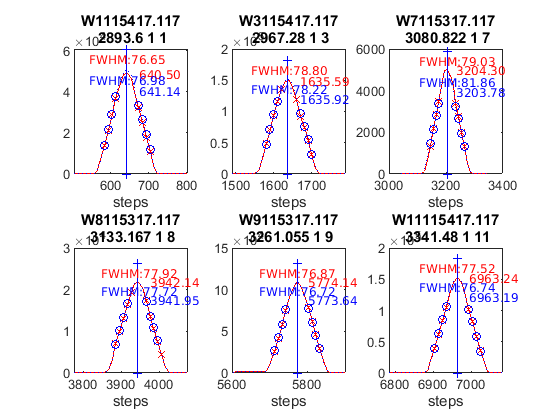

Contents
Brewer Evaluation
clear all;
file_setup='arenos2019_setup';
eval(file_setup);
Cal.n_inst=find(Cal.brw==117);
Cal.file_latex=fullfile('.','latex',Cal.brw_str{Cal.n_inst});
Cal.dir_figs=fullfile('latex',filesep(),Cal.brw_str{Cal.n_inst},...
filesep(),[Cal.brw_str{Cal.n_inst},'_figures'],filesep());
mkdir(Cal.dir_figs);
try
save(Cal.file_save,'-Append','Cal');
catch exception
fprintf('Error: %s\n Initializing data for Brewer %s\n',exception.message,Cal.brw_name{Cal.n_inst});
save(Cal.file_save);
end
ans =
logical
1
ans =
1×1 cell array
{'IZO#185'}
ans =
20×9 cell array
Columns 1 through 5
{'TSK#005'} {[ 5]} {[2]} {[0]} {'005'}
{'IOS#017'} {[ 17]} {[2]} {[0]} {'017'}
{'SCO#033'} {[ 33]} {[2]} {[0]} {'033'}
{'MAD#070'} {[ 70]} {[4]} {[0]} {'070'}
{'UK_#075'} {[ 75]} {[4]} {[0]} {'075'}
{'MUR#117'} {[117]} {[4]} {[0]} {'117'}
{'UK_#126'} {[126]} {[4]} {[0]} {'126'}
{'ARE#150'} {[150]} {[3]} {[0]} {'150'}
{'COR#151'} {[151]} {[4]} {[0]} {'151'}
{'K&Z#158'} {[158]} {[3]} {[0]} {'158'}
{'WRC#163'} {[163]} {[3]} {[0]} {'163'}
{'ZAR#166'} {[166]} {[4]} {[0]} {'166'}
{'UK_#172'} {[172]} {[3]} {[0]} {'172'}
{'JAP#174'} {[174]} {[3]} {[0]} {'174'}
{'IZO#185'} {[185]} {[3]} {[0]} {'185'}
{'MAD#186'} {[186]} {[3]} {[0]} {'186'}
{'CAN#190'} {[190]} {[3]} {[0]} {'190'}
{'TAM#201'} {[201]} {[3]} {[0]} {'201'}
{'DNK#202'} {[202]} {[3]} {[0]} {'202'}
{'DNK#228'} {[228]} {[3]} {[0]} {'228'}
Columns 6 through 9
{'..\005\ICF15117…'} {'..\005\ICF15117…'} {'1838'} {'1838'}
{'..\017\ICF14919…'} {'..\017\ICF14919…'} {'1680'} {'1680'}
{'..\033\ICF15617…'} {'..\033\IOS15617…'} {'2325'} {'2325'}
{'..\070\ICF15617…'} {'..\070\IOS15617…'} {'1685'} {'1685'}
{'..\075\ICF15017…'} {'..\075\ICF15017…'} {'1714'} {'1714'}
{'..\117\ICF15517…'} {'..\117\IOS15517…'} {'1620'} {'1620'}
{'..\126\icf15517…'} {'..\126\ICF17419…'} {'1710'} {'1710'}
{'..\150\ICF15617…'} {'..\150\ICF15617…'} {'0322'} {'0322'}
{'..\151\ICF15317…'} {'..\151\IOS15317…'} {'1880'} {'1880'}
{'..\158\ICF21218…'} {'..\158\ICF21218…'} {'0558'} {'0558'}
{'..\163\ICF23318…'} {'..\163\ICF23318…'} {'0274'} {'0274'}
{'..\166\ICF15217…'} {'..\166\ICF17419…'} {'1955'} {'1955'}
{'..\172\ICF15117…'} {'..\172\ICF15117…'} {'0444'} {'0444'}
{'..\174\ICF20718…'} {'..\174\ICF20718…'} {'0605'} {'0605'}
{'..\185\config18…'} {'..\185\ICF09819…'} {'0365'} {'0367'}
{'..\186\ICF15317…'} {'..\186\IOS15317…'} {'0315'} {'0315'}
{'..\190\ICF11419…'} {'..\190\ICF11419…'} {'0410'} {'0410'}
{'..\201\ICF14315…'} {'..\201\ICF14315…'} {'0320'} {'0320'}
{'..\202\ICF15017…'} {'..\202\ICF15017…'} {'0270'} {'0270'}
{'..\228\ICF15017…'} {'..\228\ICF17319…'} {'0242'} {'0242'}
Warning: Directory already exists.
configuration files
close all
[config_def,TCdef,DTdef,ETCdef,A1def,ATdef]=read_icf(Cal.brw_config_files{Cal.n_inst,2});
[config_orig,TCorig,DTorig,ETCorig,A1orig,ATorig]=read_icf(Cal.brw_config_files{Cal.n_inst,1});
Station.OSC=680;
Station.name='';
Station.lat=67;
Station.long=50;
Station.meanozo=350;
cal_step={}; sc_avg={}; sc_raw={}; Args={};
Sun_scan: Before Campaign
close all
[cal_step{1},sc_avg{1},sc_raw{1},Args{1}]=sc_report(Cal.brw_str{Cal.n_inst},Cal.brw_config_files{Cal.n_inst,1},...
'date_range',datenum(Cal.Date.cal_year,1,[1 159]),...
'CSN_orig',config_orig(14),'OSC',Station.OSC,...
'control_flag',1,'residual_limit',35,...
'hg_time',15,'one_flag',0);
117
OK->B02319.117
OK->B12919.117
OK->B13019.117
OK->B13119.117
OK->B13219.117
OK->B13419.117
OK->B13519.117
OK->B13619.117
OK->B13719.117
OK->B13919.117
OK->B14019.117
OK->B14119.117
OK->B14219.117
OK->B14319.117
OK->B14419.117
OK->B14519.117
OK->B14619.117
OK->B14719.117
OK->B14819.117
OK->B14919.117
OK->B15019.117
OK->B15119.117
OK->B15219.117
OK->B15319.117
OK->B15419.117
OK->B15519.117
OK->B15619.117
OK->B15719.117
OK->B15819.117

Sun_scan: Campaign
[cal_step{2},sc_avg{2},sc_raw{2},Args{2}]=sc_report(Cal.brw_str{Cal.n_inst},Cal.brw_config_files{Cal.n_inst,2},...
'date_range',datenum(Cal.Date.cal_year,1,Cal.calibration_days{Cal.n_inst,1}([1 end])),...
'CSN_orig',config_def(14),'OSC',Station.OSC,...
'control_flag',1,'residual_limit',35,...
'hg_time',15,'one_flag',1);
117
OK->B16819.117
OK->B17019.117
OK->B17119.117
OK->B17219.117

ix=sort(findobj('tag','SC_INDIVIDUAL')); figure(ix); set(get(gca,'title'),'FontSize',8);
printfiles_report(ix',Cal.dir_figs,'aux_pattern',ix,'FontSize',.9,'Width',8.5,'Height',7);
ix=sort(findobj('tag','Final_SC_Calculation'));
if length(ix)>1
Width=8; Height=6;
for i=1:length(ix), figure(ix(i)); set(get(gca,'title'),'FontSize',8); end
else
Width=13; Height=8;
end
printfiles_report(ix',Cal.dir_figs,'aux_pattern',ix,'Width',Width,'Height',Height);
close all
naux =
1
naux =
1
figura =
'117_figures_Final_SC_Calculation_1'
naux =
2
Definicion de variables: SC
if length(cal_step)>1
d_p=[length(cal_step)-1 length(cal_step)]; tags={'','new'};
else
d_p=1; tags={'new'};
end
idx=1; cal_step_error={};
for t=d_p
cal_step_error{t}=round(mean([abs(cal_step{t}(2)-cal_step{t}(3)),abs(cal_step{t}(2)-cal_step{t}(4))]));
latexcmd(fullfile(Cal.file_latex,['cal_wavelengthSC',tags{idx},'_',Cal.brw_str{Cal.n_inst}]),...
['\numSC',tags{idx}],size(sc_avg{t},1),...
['\CALCSTEP',tags{idx}],round(cal_step{t}(1)),...
['\calsteperror',tags{idx}],cal_step_error{t});
idx=idx+1;
end
load(Cal.file_save,'sunscan');sunscan{Cal.n_inst}.cal_step=cal_step;
sunscan{Cal.n_inst}.cal_step_error=cal_step_error;
sunscan{Cal.n_inst}.sc_avg=sc_avg; sunscan{Cal.n_inst}.sc_raw=sc_raw;
sunscan{Cal.n_inst}.info=Args;
save(Cal.file_save,'-APPEND','sunscan');
dsp calibration
res={}; detail={}; DSP_QUAD={}; QUAD_SUM={}; QUAD_DETAIL={};
CUBIC_SUM={}; CUBIC_DETAIL={}; salida={}; CSN_icf={};
l=dir(fullfile('DSP',[Cal.brw_str{Cal.n_inst},'*']));
ldsp=cellstr(cat(1,l.name));
ldsp=ldsp(end-3:end)
for jj=1:length(ldsp)
if jj==length(ldsp),confign=2; else confign=1; end
try
[res{jj},detail{jj},DSP_QUAD{jj},QUAD_SUM{jj},QUAD_DETAIL{jj},...
CUBIC_SUM{jj},CUBIC_DETAIL{jj},salida{jj},CSN_icf{jj},...
]=dspreport(Cal,'dsp_dir',fullfile('DSP',ldsp{jj}),'config_n',1);
catch
warning(sprintf('Error en %s. DSP: %s',Cal.brw_name{Cal.n_inst},ldsp{jj}));
res{jj}=NaN*ones(15,9,2); detail{jj}=NaN*ones(7,6,15,2); QUAD_DETAIL{jj}=NaN;
end
datefile =
735399
now:W1016413.117
now:W3016413.117
now:W7016413.117
now:W8016413.117
now:W9016413.117
now:W11016413.117
now:W12016413.117
now:W1116413.117
now:W3116413.117
now:W7116413.117
now:W8116413.117
now:W9116413.117
now:W11116413.117
now:W12116413.117
now:W13116413.117
now:W3216413.117
now:W7216413.117
now:W8216413.117
now:W9216413.117
now:W11216413.117
now:W12216413.117
now:W13216413.117
now:W3316413.117
now:W7316413.117
now:W8316413.117
now:W9316413.117
now:W11316413.117
now:W12316413.117
now:W13316413.117
now:W7416413.117
now:W8416413.117
now:W9416413.117
now:W11416413.117
now:W12416413.117
now:W13416413.117
now:W7516413.117
now:W8516413.117
now:W9516413.117
now:W11516413.117
now:W12516413.117
now:W13516413.117
now:W14516413.117
lines_dsp_16413__117
saving alldsp to DSP/117_13_165/alldsp_16413_117.117
eliminamos la linea slit 4 3261.055000 -0.360200
eliminamos la linea slit 3 3261.055000 -0.328229
eliminamos la linea slit 2 3261.055000 -0.332291
eliminamos la linea slit 1 2967.280000 0.298826
eliminamos la linea slit 6 3133.167000 0.222359
eliminamos la linea slit 5 3261.055000 -0.120510
eliminamos la linea slit 4 3499.952000 0.125305
eliminamos la linea slit 3 3341.480000 -0.121727
eliminamos la linea slit 2 2893.600000 -0.166627
eliminamos la linea slit 1 3341.480000 0.152416
eliminamos la linea slit 5 3133.167000 0.162479
eliminamos la linea slit 4 3403.652000 0.182786
eliminamos la linea slit 3 3133.167000 -0.168362
eliminamos la linea slit 2 3499.952000 -0.124666
eliminamos la linea slit 4 3080.822000 0.138015
eliminamos la linea slit 2 3133.167000 -0.165481
saving normaldsp to DSP/117_13_165/dspnorm_16413_117.117 as brewer compatible file
Use polyval(pwl(2,:),wl) for calculating normal wavelengths
Saving ozonecoeffs to DSP/117_13_165/opos16413_117.117
281 WL(A) 3032.27 3062.92 3100.27 3134.82 3168.05 3200.14
Res(A) 11.23 11.23 11.01 11.25 10.92 10.75
O3abs(1/cm) 2.5868 1.7818 1.0058 0.6768 0.3750 0.2928 O3: 0.3401
Daumt O3abs(1/cm) 2.5937 1.7765 0.9976 0.6707 0.3681 0.2937 O3: 0.3517
So2abs(1/cm) 3.3669 5.6064 2.3857 1.9308 1.0558 0.6067
Bremen O3abs(1/cm) 2.5977 1.7795 1.0031 0.6802 0.3733 0.2948 O3: 0.3428
Nicolet 1e4*Rayabs(1/cm) 5048.1 4832.9 4586.2 4372.2 4178.3 4001.3 R: 10.1221
Bates(fix) 1e4*Rayabs(1/cm) 0.0 4870.0 4620.0 4410.0 4220.0 4040.0 R: -1.0000
Bodhaine 1e4*Rayabs(1/cm) 5044.6 4830.9 4585.7 4372.9 4179.8 4003.6 R: 9.7489
I0(mW m^-2nm^-1) 11649.43 9388.39 7269.94 4906.47 3999.94 3166.40 ETC: 1400
Ozone offset due to Rayleigh (RayCOeff/O3Coeff): -3.0 DU
Ozone offset due to Rayleigh (Bodhaine): -3.2 DU
Ratio Ozone for So2(A3)= 1.1438, So2/O3(A2)= 2.7218
O3 factor from Bass & Paur to Daumont = 0.9671
O3 factor from Bass & Paur to Bremen = 0.9921
282 WL(A) 3032.34 3062.99 3100.34 3134.89 3168.12 3200.21
Res(A) 11.23 11.23 11.01 11.25 10.92 10.75
O3abs(1/cm) 2.5845 1.7802 1.0055 0.6765 0.3751 0.2923 O3: 0.3389
Daumt O3abs(1/cm) 2.5912 1.7751 0.9972 0.6706 0.3681 0.2933 O3: 0.3505
So2abs(1/cm) 3.3543 5.6275 2.3930 1.9191 1.0570 0.6043
Bremen O3abs(1/cm) 2.5954 1.7780 1.0028 0.6800 0.3734 0.2943 O3: 0.3417
Nicolet 1e4*Rayabs(1/cm) 5047.6 4832.4 4585.7 4371.8 4177.9 4000.9 R: 10.1211
Bates(fix) 1e4*Rayabs(1/cm) 0.0 4870.0 4620.0 4410.0 4220.0 4040.0 R: -1.0000
Bodhaine 1e4*Rayabs(1/cm) 5044.1 4830.4 4585.3 4372.4 4179.4 4003.2 R: 9.7460
I0(mW m^-2nm^-1) 11643.28 9382.27 7246.50 4902.71 3990.03 3156.74 ETC: 1384
Ozone offset due to Rayleigh (RayCOeff/O3Coeff): -3.0 DU
Ozone offset due to Rayleigh (Bodhaine): -3.2 DU
Ratio Ozone for So2(A3)= 1.1401, So2/O3(A2)= 2.7383
O3 factor from Bass & Paur to Daumont = 0.9666
O3 factor from Bass & Paur to Bremen = 0.9917
283 WL(A) 3032.41 3063.06 3100.41 3134.96 3168.19 3200.28
Res(A) 11.23 11.23 11.01 11.25 10.92 10.75
O3abs(1/cm) 2.5821 1.7785 1.0052 0.6762 0.3752 0.2917 O3: 0.3376
Daumt O3abs(1/cm) 2.5888 1.7737 0.9968 0.6704 0.3682 0.2928 O3: 0.3494
So2abs(1/cm) 3.3429 5.6487 2.4004 1.9076 1.0582 0.6019
Bremen O3abs(1/cm) 2.5930 1.7765 1.0024 0.6798 0.3735 0.2939 O3: 0.3405
Nicolet 1e4*Rayabs(1/cm) 5047.0 4831.9 4585.3 4371.3 4177.5 4000.5 R: 10.1201
Bates(fix) 1e4*Rayabs(1/cm) 0.0 4870.0 4620.0 4410.0 4220.0 4040.0 R: -1.0000
Bodhaine 1e4*Rayabs(1/cm) 5043.6 4829.9 4584.8 4372.0 4179.0 4002.8 R: 9.7440
I0(mW m^-2nm^-1) 11637.15 9376.15 7223.19 4898.95 3980.15 3147.11 ETC: 1367
Ozone offset due to Rayleigh (RayCOeff/O3Coeff): -3.0 DU
Ozone offset due to Rayleigh (Bodhaine): -3.2 DU
Ratio Ozone for So2(A3)= 1.1362, So2/O3(A2)= 2.7551
O3 factor from Bass & Paur to Daumont = 0.9662
O3 factor from Bass & Paur to Bremen = 0.9915
284 WL(A) 3032.48 3063.13 3100.48 3135.03 3168.26 3200.35
Res(A) 11.23 11.23 11.01 11.25 10.92 10.75
O3abs(1/cm) 2.5797 1.7769 1.0049 0.6758 0.3752 0.2910 O3: 0.3362
Daumt O3abs(1/cm) 2.5865 1.7723 0.9965 0.6702 0.3683 0.2924 O3: 0.3482
So2abs(1/cm) 3.3314 5.6694 2.4084 1.8964 1.0594 0.5995
Bremen O3abs(1/cm) 2.5907 1.7749 1.0021 0.6796 0.3735 0.2934 O3: 0.3392
Nicolet 1e4*Rayabs(1/cm) 5046.5 4831.4 4584.8 4370.9 4177.1 4000.2 R: 10.1191
Bates(fix) 1e4*Rayabs(1/cm) 0.0 4870.0 4620.0 4410.0 4220.0 4040.0 R: -1.0000
Bodhaine 1e4*Rayabs(1/cm) 5043.1 4829.4 4584.4 4371.6 4178.6 4002.5 R: 9.7470
I0(mW m^-2nm^-1) 11631.02 9370.05 7200.01 4895.20 3970.29 3137.49 ETC: 1352
Ozone offset due to Rayleigh (RayCOeff/O3Coeff): -3.0 DU
Ozone offset due to Rayleigh (Bodhaine): -3.2 DU
Ratio Ozone for So2(A3)= 1.1322, So2/O3(A2)= 2.7719
O3 factor from Bass & Paur to Daumont = 0.9657
O3 factor from Bass & Paur to Bremen = 0.9911
285 WL(A) 3032.56 3063.21 3100.56 3135.10 3168.33 3200.42
Res(A) 11.23 11.23 11.01 11.25 10.92 10.75
O3abs(1/cm) 2.5772 1.7753 1.0046 0.6755 0.3753 0.2905 O3: 0.3349
Daumt O3abs(1/cm) 2.5841 1.7708 0.9961 0.6700 0.3684 0.2919 O3: 0.3469
So2abs(1/cm) 3.3207 5.6894 2.4164 1.8849 1.0606 0.5971
Bremen O3abs(1/cm) 2.5884 1.7734 1.0017 0.6793 0.3736 0.2929 O3: 0.3380
Nicolet 1e4*Rayabs(1/cm) 5046.0 4830.9 4584.4 4370.5 4176.7 3999.8 R: 10.1181
Bates(fix) 1e4*Rayabs(1/cm) 0.0 4870.0 4620.0 4410.0 4220.0 4040.0 R: -1.0000
Bodhaine 1e4*Rayabs(1/cm) 5042.5 4828.9 4583.9 4371.2 4178.2 4002.1 R: 9.7439
I0(mW m^-2nm^-1) 11624.90 9363.95 7183.47 4891.44 3960.45 3132.01 ETC: 1349
Ozone offset due to Rayleigh (RayCOeff/O3Coeff): -3.0 DU
Ozone offset due to Rayleigh (Bodhaine): -3.2 DU
Ratio Ozone for So2(A3)= 1.1284, So2/O3(A2)= 2.7878
O3 factor from Bass & Paur to Daumont = 0.9654
O3 factor from Bass & Paur to Bremen = 0.9909
286 WL(A) 3032.63 3063.28 3100.63 3135.17 3168.40 3200.49
Res(A) 11.23 11.23 11.01 11.25 10.92 10.75
O3abs(1/cm) 2.5748 1.7738 1.0043 0.6751 0.3754 0.2899 O3: 0.3336
Daumt O3abs(1/cm) 2.5818 1.7693 0.9958 0.6698 0.3685 0.2914 O3: 0.3456
So2abs(1/cm) 3.3107 5.7074 2.4244 1.8730 1.0617 0.5947
Bremen O3abs(1/cm) 2.5861 1.7718 1.0014 0.6790 0.3737 0.2924 O3: 0.3366
Nicolet 1e4*Rayabs(1/cm) 5045.4 4830.4 4583.9 4370.1 4176.3 3999.4 R: 10.1171
Bates(fix) 1e4*Rayabs(1/cm) 0.0 4870.0 4620.0 4410.0 4220.0 4040.0 R: -1.0000
Bodhaine 1e4*Rayabs(1/cm) 5042.0 4828.4 4583.5 4370.7 4177.9 4001.7 R: 9.7410
I0(mW m^-2nm^-1) 11618.79 9357.86 7169.93 4887.69 3950.63 3128.84 ETC: 1354
Ozone offset due to Rayleigh (RayCOeff/O3Coeff): -3.0 DU
Ozone offset due to Rayleigh (Bodhaine): -3.2 DU
Ratio Ozone for So2(A3)= 1.1247, So2/O3(A2)= 2.8021
O3 factor from Bass & Paur to Daumont = 0.9653
O3 factor from Bass & Paur to Bremen = 0.9910
287 WL(A) 3032.70 3063.35 3100.70 3135.24 3168.47 3200.56
Res(A) 11.23 11.23 11.01 11.25 10.92 10.75
O3abs(1/cm) 2.5726 1.7722 1.0040 0.6747 0.3755 0.2893 O3: 0.3323
Daumt O3abs(1/cm) 2.5795 1.7678 0.9954 0.6695 0.3686 0.2908 O3: 0.3443
So2abs(1/cm) 3.3019 5.7251 2.4325 1.8614 1.0628 0.5923
Bremen O3abs(1/cm) 2.5839 1.7702 1.0010 0.6787 0.3739 0.2918 O3: 0.3353
Nicolet 1e4*Rayabs(1/cm) 5044.9 4829.9 4583.5 4369.6 4175.9 3999.1 R: 10.1161
Bates(fix) 1e4*Rayabs(1/cm) 0.0 4870.0 4620.0 4410.0 4220.0 4040.0 R: -1.0000
Bodhaine 1e4*Rayabs(1/cm) 5041.5 4827.9 4583.0 4370.3 4177.5 4001.4 R: 9.7429
I0(mW m^-2nm^-1) 11612.69 9351.78 7156.76 4883.94 3940.84 3125.75 ETC: 1359
Ozone offset due to Rayleigh (RayCOeff/O3Coeff): -3.0 DU
Ozone offset due to Rayleigh (Bodhaine): -3.2 DU
Ratio Ozone for So2(A3)= 1.1208, So2/O3(A2)= 2.8164
O3 factor from Bass & Paur to Daumont = 0.9653
O3 factor from Bass & Paur to Bremen = 0.9911
288 WL(A) 3032.78 3063.42 3100.77 3135.32 3168.54 3200.63
Res(A) 11.23 11.23 11.01 11.25 10.92 10.75
O3abs(1/cm) 2.5704 1.7705 1.0037 0.6742 0.3756 0.2887 O3: 0.3310
Daumt O3abs(1/cm) 2.5772 1.7663 0.9951 0.6692 0.3687 0.2903 O3: 0.3429
So2abs(1/cm) 3.2931 5.7424 2.4413 1.8501 1.0639 0.5898
Bremen O3abs(1/cm) 2.5817 1.7685 1.0007 0.6784 0.3740 0.2913 O3: 0.3339
Nicolet 1e4*Rayabs(1/cm) 5044.4 4829.4 4583.0 4369.2 4175.5 3998.7 R: 10.1151
Bates(fix) 1e4*Rayabs(1/cm) 0.0 4870.0 4620.0 4410.0 4220.0 4040.0 R: -1.0000
Bodhaine 1e4*Rayabs(1/cm) 5041.0 4827.4 4582.5 4369.9 4177.1 4001.0 R: 9.7418
I0(mW m^-2nm^-1) 11606.60 9345.71 7141.38 4880.20 3931.06 3122.74 ETC: 1362
Ozone offset due to Rayleigh (RayCOeff/O3Coeff): -3.1 DU
Ozone offset due to Rayleigh (Bodhaine): -3.2 DU
Ratio Ozone for So2(A3)= 1.1167, So2/O3(A2)= 2.8309
O3 factor from Bass & Paur to Daumont = 0.9652
O3 factor from Bass & Paur to Bremen = 0.9912
289 WL(A) 3032.85 3063.50 3100.84 3135.39 3168.61 3200.70
Res(A) 11.22 11.23 11.01 11.25 10.92 10.75
O3abs(1/cm) 2.5683 1.7687 1.0033 0.6737 0.3758 0.2880 O3: 0.3295
Daumt O3abs(1/cm) 2.5750 1.7647 0.9947 0.6689 0.3688 0.2898 O3: 0.3415
So2abs(1/cm) 3.2852 5.7589 2.4501 1.8386 1.0650 0.5873
Bremen O3abs(1/cm) 2.5795 1.7669 1.0003 0.6780 0.3741 0.2907 O3: 0.3325
Nicolet 1e4*Rayabs(1/cm) 5043.9 4828.9 4582.6 4368.8 4175.1 3998.3 R: 10.1140
Bates(fix) 1e4*Rayabs(1/cm) 0.0 4870.0 4620.0 4410.0 4220.0 4040.0 R: -1.0000
Bodhaine 1e4*Rayabs(1/cm) 5040.4 4827.0 4582.1 4369.5 4176.7 4000.6 R: 9.7385
I0(mW m^-2nm^-1) 11600.51 9339.64 7125.25 4876.46 3921.31 3119.80 ETC: 1364
Ozone offset due to Rayleigh (RayCOeff/O3Coeff): -3.1 DU
Ozone offset due to Rayleigh (Bodhaine): -3.3 DU
Ratio Ozone for So2(A3)= 1.1122, So2/O3(A2)= 2.8458
O3 factor from Bass & Paur to Daumont = 0.9648
O3 factor from Bass & Paur to Bremen = 0.9909
290 WL(A) 3032.92 3063.57 3100.91 3135.46 3168.68 3200.76
Res(A) 11.22 11.23 11.01 11.25 10.92 10.75
O3abs(1/cm) 2.5661 1.7669 1.0030 0.6732 0.3759 0.2873 O3: 0.3279
Daumt O3abs(1/cm) 2.5728 1.7631 0.9944 0.6686 0.3689 0.2892 O3: 0.3400
So2abs(1/cm) 3.2779 5.7736 2.4588 1.8268 1.0660 0.5848
Bremen O3abs(1/cm) 2.5773 1.7652 1.0000 0.6777 0.3742 0.2901 O3: 0.3310
Nicolet 1e4*Rayabs(1/cm) 5043.3 4828.4 4582.1 4368.4 4174.7 3997.9 R: 10.1130
Bates(fix) 1e4*Rayabs(1/cm) 0.0 4870.0 4620.0 4410.0 4220.0 4040.0 R: -1.0000
Bodhaine 1e4*Rayabs(1/cm) 5039.9 4826.5 4581.6 4369.1 4176.3 4000.3 R: 9.7385
I0(mW m^-2nm^-1) 11594.43 9333.59 7109.18 4872.72 3911.58 3116.26 ETC: 1365
Ozone offset due to Rayleigh (RayCOeff/O3Coeff): -3.1 DU
Ozone offset due to Rayleigh (Bodhaine): -3.3 DU
Ratio Ozone for So2(A3)= 1.1076, So2/O3(A2)= 2.8598
O3 factor from Bass & Paur to Daumont = 0.9643
O3 factor from Bass & Paur to Bremen = 0.9906
291 WL(A) 3033.00 3063.64 3100.98 3135.53 3168.75 3200.83
Res(A) 11.22 11.23 11.01 11.25 10.92 10.75
O3abs(1/cm) 2.5639 1.7651 1.0027 0.6726 0.3760 0.2866 O3: 0.3263
Daumt O3abs(1/cm) 2.5706 1.7615 0.9940 0.6683 0.3691 0.2886 O3: 0.3386
So2abs(1/cm) 3.2719 5.7877 2.4676 1.8150 1.0671 0.5823
Bremen O3abs(1/cm) 2.5752 1.7635 0.9996 0.6773 0.3744 0.2895 O3: 0.3295
Nicolet 1e4*Rayabs(1/cm) 5042.8 4827.9 4581.6 4368.0 4174.3 3997.6 R: 10.1120
Bates(fix) 1e4*Rayabs(1/cm) 0.0 4870.0 4620.0 4410.0 4220.0 4040.0 R: -1.0000
Bodhaine 1e4*Rayabs(1/cm) 5039.4 4826.0 4581.2 4368.6 4175.9 3999.9 R: 9.7405
I0(mW m^-2nm^-1) 11588.36 9327.54 7093.17 4868.99 3901.88 3112.70 ETC: 1366
Ozone offset due to Rayleigh (RayCOeff/O3Coeff): -3.1 DU
Ozone offset due to Rayleigh (Bodhaine): -3.3 DU
Ratio Ozone for So2(A3)= 1.1029, So2/O3(A2)= 2.8737
O3 factor from Bass & Paur to Daumont = 0.9638
O3 factor from Bass & Paur to Bremen = 0.9902
saving powfiu7 to DSP/117_13_165/dsp_16413_117.117
freecoef =
4
freecoef =
9
freecoef =
9
freecoef =
9
freecoef =
9
freecoef =
9
freecoef =
9
freecoef =
9
freecoef =
9
freecoef =
9
saving data to file:DSP/117_13_165/dsp_16413_117.117
Use brstps2 to calculate steps and wavelengths
Saving ozonecoeffs to DSP/117_13_165/opos_pow7_16413_117.117
281 WL(A) 3032.04 3063.11 3100.51 3135.00 3167.92 3199.91
Res(A) 11.22 11.23 11.03 11.27 10.90 10.74
O3abs(1/cm) 2.5944 1.7775 1.0047 0.6759 0.3749 0.2944 O3: 0.3425
Daumt O3abs(1/cm) 2.6014 1.7728 0.9964 0.6703 0.3680 0.2950 O3: 0.3531
So2abs(1/cm) 3.4095 5.6617 2.4119 1.9015 1.0536 0.6142
Bremen O3abs(1/cm) 2.6052 1.7755 1.0019 0.6796 0.3732 0.2961 O3: 0.3445
Nicolet 1e4*Rayabs(1/cm) 5049.7 4831.6 4584.7 4371.1 4179.0 4002.5 R: 9.6324
Bates(fix) 1e4*Rayabs(1/cm) 0.0 4870.0 4620.0 4410.0 4220.0 4040.0 R: -1.0000
Bodhaine 1e4*Rayabs(1/cm) 5046.3 4829.6 4584.2 4371.8 4180.5 4004.8 R: 9.2627
I0(mW m^-2nm^-1) 11668.56 9372.29 7190.84 4897.07 4017.78 3198.62 ETC: 1341
Ozone offset due to Rayleigh (RayCOeff/O3Coeff): -2.8 DU
Ozone offset due to Rayleigh (Bodhaine): -3.0 DU
Ratio Ozone for So2(A3)= 1.1451, So2/O3(A2)= 2.7962
O3 factor from Bass & Paur to Daumont = 0.9700
O3 factor from Bass & Paur to Bremen = 0.9943
282 WL(A) 3032.11 3063.18 3100.58 3135.07 3167.99 3199.98
Res(A) 11.22 11.23 11.03 11.27 10.90 10.74
O3abs(1/cm) 2.5918 1.7759 1.0044 0.6756 0.3749 0.2939 O3: 0.3415
Daumt O3abs(1/cm) 2.5988 1.7713 0.9960 0.6701 0.3680 0.2946 O3: 0.3522
So2abs(1/cm) 3.3954 5.6820 2.4199 1.8902 1.0549 0.6120
Bremen O3abs(1/cm) 2.6027 1.7739 1.0016 0.6794 0.3733 0.2957 O3: 0.3435
Nicolet 1e4*Rayabs(1/cm) 5049.2 4831.1 4584.2 4370.7 4178.6 4002.1 R: 9.6301
Bates(fix) 1e4*Rayabs(1/cm) 0.0 4870.0 4620.0 4410.0 4220.0 4040.0 R: -1.0000
Bodhaine 1e4*Rayabs(1/cm) 5045.7 4829.1 4583.7 4371.4 4180.1 4004.4 R: 9.2600
I0(mW m^-2nm^-1) 11662.39 9366.19 7176.61 4893.32 4007.82 3188.89 ETC: 1334
Ozone offset due to Rayleigh (RayCOeff/O3Coeff): -2.8 DU
Ozone offset due to Rayleigh (Bodhaine): -3.0 DU
Ratio Ozone for So2(A3)= 1.1417, So2/O3(A2)= 2.8114
O3 factor from Bass & Paur to Daumont = 0.9696
O3 factor from Bass & Paur to Bremen = 0.9941
283 WL(A) 3032.18 3063.25 3100.65 3135.14 3168.06 3200.05
Res(A) 11.22 11.23 11.03 11.27 10.90 10.74
O3abs(1/cm) 2.5894 1.7743 1.0041 0.6752 0.3750 0.2935 O3: 0.3404
Daumt O3abs(1/cm) 2.5964 1.7698 0.9957 0.6698 0.3681 0.2943 O3: 0.3512
So2abs(1/cm) 3.3814 5.7007 2.4279 1.8784 1.0561 0.6097
Bremen O3abs(1/cm) 2.6003 1.7723 1.0012 0.6791 0.3733 0.2953 O3: 0.3425
Nicolet 1e4*Rayabs(1/cm) 5048.7 4830.6 4583.8 4370.3 4178.2 4001.8 R: 9.6277
Bates(fix) 1e4*Rayabs(1/cm) 0.0 4870.0 4620.0 4410.0 4220.0 4040.0 R: -1.0000
Bodhaine 1e4*Rayabs(1/cm) 5045.2 4828.6 4583.3 4370.9 4179.8 4004.1 R: 9.2591
I0(mW m^-2nm^-1) 11656.22 9360.10 7163.25 4889.58 3997.89 3179.17 ETC: 1328
Ozone offset due to Rayleigh (RayCOeff/O3Coeff): -2.8 DU
Ozone offset due to Rayleigh (Bodhaine): -3.0 DU
Ratio Ozone for So2(A3)= 1.1384, So2/O3(A2)= 2.8252
O3 factor from Bass & Paur to Daumont = 0.9693
O3 factor from Bass & Paur to Bremen = 0.9939
284 WL(A) 3032.26 3063.32 3100.73 3135.21 3168.13 3200.12
Res(A) 11.22 11.23 11.03 11.27 10.90 10.74
O3abs(1/cm) 2.5870 1.7728 1.0038 0.6748 0.3751 0.2930 O3: 0.3394
Daumt O3abs(1/cm) 2.5939 1.7683 0.9953 0.6696 0.3681 0.2939 O3: 0.3501
So2abs(1/cm) 3.3679 5.7185 2.4363 1.8666 1.0573 0.6075
Bremen O3abs(1/cm) 2.5979 1.7707 1.0009 0.6788 0.3734 0.2949 O3: 0.3414
Nicolet 1e4*Rayabs(1/cm) 5048.1 4830.1 4583.3 4369.8 4177.8 4001.4 R: 9.6253
Bates(fix) 1e4*Rayabs(1/cm) 0.0 4870.0 4620.0 4410.0 4220.0 4040.0 R: -1.0000
Bodhaine 1e4*Rayabs(1/cm) 5044.7 4828.1 4582.8 4370.5 4179.4 4003.7 R: 9.2567
I0(mW m^-2nm^-1) 11650.06 9354.02 7149.86 4885.84 3987.97 3169.48 ETC: 1322
Ozone offset due to Rayleigh (RayCOeff/O3Coeff): -2.8 DU
Ozone offset due to Rayleigh (Bodhaine): -3.0 DU
Ratio Ozone for So2(A3)= 1.1350, So2/O3(A2)= 2.8385
O3 factor from Bass & Paur to Daumont = 0.9692
O3 factor from Bass & Paur to Bremen = 0.9940
285 WL(A) 3032.33 3063.40 3100.80 3135.28 3168.20 3200.19
Res(A) 11.22 11.23 11.03 11.27 10.90 10.74
O3abs(1/cm) 2.5847 1.7711 1.0035 0.6744 0.3752 0.2925 O3: 0.3382
Daumt O3abs(1/cm) 2.5915 1.7668 0.9950 0.6693 0.3682 0.2934 O3: 0.3491
So2abs(1/cm) 3.3552 5.7361 2.4451 1.8552 1.0585 0.6051
Bremen O3abs(1/cm) 2.5956 1.7691 1.0005 0.6785 0.3735 0.2945 O3: 0.3403
Nicolet 1e4*Rayabs(1/cm) 5047.6 4829.6 4582.8 4369.4 4177.4 4001.0 R: 9.6230
Bates(fix) 1e4*Rayabs(1/cm) 0.0 4870.0 4620.0 4410.0 4220.0 4040.0 R: -1.0000
Bodhaine 1e4*Rayabs(1/cm) 5044.2 4827.6 4582.4 4370.1 4179.0 4003.3 R: 9.2529
I0(mW m^-2nm^-1) 11643.92 9347.94 7133.72 4882.10 3978.08 3159.81 ETC: 1313
Ozone offset due to Rayleigh (RayCOeff/O3Coeff): -2.8 DU
Ozone offset due to Rayleigh (Bodhaine): -3.0 DU
Ratio Ozone for So2(A3)= 1.1314, So2/O3(A2)= 2.8521
O3 factor from Bass & Paur to Daumont = 0.9688
O3 factor from Bass & Paur to Bremen = 0.9937
286 WL(A) 3032.40 3063.47 3100.87 3135.35 3168.27 3200.26
Res(A) 11.22 11.23 11.03 11.27 10.90 10.74
O3abs(1/cm) 2.5824 1.7693 1.0032 0.6739 0.3753 0.2919 O3: 0.3368
Daumt O3abs(1/cm) 2.5891 1.7653 0.9946 0.6690 0.3683 0.2930 O3: 0.3479
So2abs(1/cm) 3.3437 5.7528 2.4539 1.8439 1.0596 0.6027
Bremen O3abs(1/cm) 2.5932 1.7675 1.0002 0.6781 0.3736 0.2940 O3: 0.3392
Nicolet 1e4*Rayabs(1/cm) 5047.1 4829.1 4582.4 4369.0 4177.0 4000.7 R: 9.6206
Bates(fix) 1e4*Rayabs(1/cm) 0.0 4870.0 4620.0 4410.0 4220.0 4040.0 R: -1.0000
Bodhaine 1e4*Rayabs(1/cm) 5043.6 4827.1 4581.9 4369.7 4178.6 4003.0 R: 9.2516
I0(mW m^-2nm^-1) 11637.78 9341.88 7117.65 4878.37 3968.22 3150.15 ETC: 1304
Ozone offset due to Rayleigh (RayCOeff/O3Coeff): -2.9 DU
Ozone offset due to Rayleigh (Bodhaine): -3.0 DU
Ratio Ozone for So2(A3)= 1.1273, So2/O3(A2)= 2.8663
O3 factor from Bass & Paur to Daumont = 0.9682
O3 factor from Bass & Paur to Bremen = 0.9932
287 WL(A) 3032.48 3063.54 3100.94 3135.42 3168.34 3200.33
Res(A) 11.22 11.23 11.03 11.27 10.90 10.74
O3abs(1/cm) 2.5799 1.7675 1.0029 0.6734 0.3753 0.2913 O3: 0.3356
Daumt O3abs(1/cm) 2.5867 1.7637 0.9942 0.6687 0.3684 0.2925 O3: 0.3468
So2abs(1/cm) 3.3323 5.7682 2.4626 1.8321 1.0608 0.6004
Bremen O3abs(1/cm) 2.5909 1.7658 0.9998 0.6778 0.3736 0.2936 O3: 0.3380
Nicolet 1e4*Rayabs(1/cm) 5046.6 4828.6 4581.9 4368.6 4176.6 4000.3 R: 9.6183
Bates(fix) 1e4*Rayabs(1/cm) 0.0 4870.0 4620.0 4410.0 4220.0 4040.0 R: -1.0000
Bodhaine 1e4*Rayabs(1/cm) 5043.1 4826.6 4581.5 4369.2 4178.2 4002.6 R: 9.2511
I0(mW m^-2nm^-1) 11631.65 9335.82 7101.63 4874.64 3958.37 3140.52 ETC: 1295
Ozone offset due to Rayleigh (RayCOeff/O3Coeff): -2.9 DU
Ozone offset due to Rayleigh (Bodhaine): -3.1 DU
Ratio Ozone for So2(A3)= 1.1232, So2/O3(A2)= 2.8793
O3 factor from Bass & Paur to Daumont = 0.9678
O3 factor from Bass & Paur to Bremen = 0.9929
288 WL(A) 3032.55 3063.61 3101.01 3135.50 3168.41 3200.40
Res(A) 11.22 11.23 11.03 11.27 10.90 10.74
O3abs(1/cm) 2.5774 1.7658 1.0025 0.6728 0.3754 0.2907 O3: 0.3343
Daumt O3abs(1/cm) 2.5843 1.7621 0.9939 0.6684 0.3685 0.2920 O3: 0.3455
So2abs(1/cm) 3.3215 5.7824 2.4717 1.8203 1.0619 0.5979
Bremen O3abs(1/cm) 2.5886 1.7642 0.9995 0.6774 0.3738 0.2931 O3: 0.3367
Nicolet 1e4*Rayabs(1/cm) 5046.0 4828.1 4581.5 4368.1 4176.2 3999.9 R: 9.6159
Bates(fix) 1e4*Rayabs(1/cm) 0.0 4870.0 4620.0 4410.0 4220.0 4040.0 R: -1.0000
Bodhaine 1e4*Rayabs(1/cm) 5042.6 4826.2 4581.0 4368.8 4177.8 4002.2 R: 9.2456
I0(mW m^-2nm^-1) 11625.52 9329.77 7085.68 4870.92 3948.55 3133.19 ETC: 1290
Ozone offset due to Rayleigh (RayCOeff/O3Coeff): -2.9 DU
Ozone offset due to Rayleigh (Bodhaine): -3.1 DU
Ratio Ozone for So2(A3)= 1.1191, So2/O3(A2)= 2.8912
O3 factor from Bass & Paur to Daumont = 0.9675
O3 factor from Bass & Paur to Bremen = 0.9928
289 WL(A) 3032.62 3063.69 3101.08 3135.57 3168.48 3200.47
Res(A) 11.22 11.23 11.03 11.27 10.90 10.74
O3abs(1/cm) 2.5750 1.7640 1.0021 0.6723 0.3755 0.2901 O3: 0.3330
Daumt O3abs(1/cm) 2.5820 1.7605 0.9935 0.6680 0.3686 0.2916 O3: 0.3443
So2abs(1/cm) 3.3113 5.7965 2.4812 1.8088 1.0630 0.5955
Bremen O3abs(1/cm) 2.5864 1.7625 0.9991 0.6770 0.3739 0.2925 O3: 0.3355
Nicolet 1e4*Rayabs(1/cm) 5045.5 4827.6 4581.0 4367.7 4175.8 3999.5 R: 9.6136
Bates(fix) 1e4*Rayabs(1/cm) 0.0 4870.0 4620.0 4410.0 4220.0 4040.0 R: -1.0000
Bodhaine 1e4*Rayabs(1/cm) 5042.1 4825.7 4580.6 4368.4 4177.4 4001.9 R: 9.2441
I0(mW m^-2nm^-1) 11619.41 9323.73 7069.78 4867.19 3938.75 3129.99 ETC: 1292
Ozone offset due to Rayleigh (RayCOeff/O3Coeff): -2.9 DU
Ozone offset due to Rayleigh (Bodhaine): -3.1 DU
Ratio Ozone for So2(A3)= 1.1151, So2/O3(A2)= 2.9033
O3 factor from Bass & Paur to Daumont = 0.9672
O3 factor from Bass & Paur to Bremen = 0.9926
290 WL(A) 3032.70 3063.76 3101.15 3135.64 3168.55 3200.53
Res(A) 11.22 11.23 11.03 11.27 10.90 10.74
O3abs(1/cm) 2.5728 1.7623 1.0018 0.6717 0.3756 0.2895 O3: 0.3316
Daumt O3abs(1/cm) 2.5797 1.7589 0.9932 0.6676 0.3687 0.2910 O3: 0.3430
So2abs(1/cm) 3.3025 5.8096 2.4907 1.7975 1.0641 0.5931
Bremen O3abs(1/cm) 2.5841 1.7607 0.9988 0.6765 0.3740 0.2920 O3: 0.3342
Nicolet 1e4*Rayabs(1/cm) 5045.0 4827.1 4580.6 4367.3 4175.4 3999.2 R: 9.6112
Bates(fix) 1e4*Rayabs(1/cm) 0.0 4870.0 4620.0 4410.0 4220.0 4040.0 R: -1.0000
Bodhaine 1e4*Rayabs(1/cm) 5041.6 4825.2 4580.1 4368.0 4177.0 4001.5 R: 9.2450
I0(mW m^-2nm^-1) 11613.31 9317.70 7053.94 4863.65 3928.97 3126.87 ETC: 1294
Ozone offset due to Rayleigh (RayCOeff/O3Coeff): -2.9 DU
Ozone offset due to Rayleigh (Bodhaine): -3.1 DU
Ratio Ozone for So2(A3)= 1.1110, So2/O3(A2)= 2.9147
O3 factor from Bass & Paur to Daumont = 0.9669
O3 factor from Bass & Paur to Bremen = 0.9924
291 WL(A) 3032.77 3063.83 3101.23 3135.71 3168.62 3200.60
Res(A) 11.22 11.23 11.03 11.26 10.90 10.74
O3abs(1/cm) 2.5706 1.7605 1.0014 0.6711 0.3758 0.2889 O3: 0.3303
Daumt O3abs(1/cm) 2.5774 1.7572 0.9928 0.6672 0.3688 0.2905 O3: 0.3417
So2abs(1/cm) 3.2938 5.8215 2.5002 1.7859 1.0652 0.5906
Bremen O3abs(1/cm) 2.5819 1.7590 0.9984 0.6761 0.3741 0.2915 O3: 0.3328
Nicolet 1e4*Rayabs(1/cm) 5044.4 4826.6 4580.1 4366.9 4175.0 3998.8 R: 9.6089
Bates(fix) 1e4*Rayabs(1/cm) 0.0 4870.0 4620.0 4410.0 4220.0 4040.0 R: -1.0000
Bodhaine 1e4*Rayabs(1/cm) 5041.0 4824.7 4579.6 4367.6 4176.6 4001.1 R: 9.2396
I0(mW m^-2nm^-1) 11607.21 9311.67 7038.15 4862.78 3919.21 3123.83 ETC: 1295
Ozone offset due to Rayleigh (RayCOeff/O3Coeff): -2.9 DU
Ozone offset due to Rayleigh (Bodhaine): -3.1 DU
Ratio Ozone for So2(A3)= 1.1068, So2/O3(A2)= 2.9252
O3 factor from Bass & Paur to Daumont = 0.9667
O3 factor from Bass & Paur to Bremen = 0.9923
Warning: The EraseMode property is no longer supported and will
error in a future release.
Warning: The EraseMode property is no longer supported and will
error in a future release.
Warning: The EraseMode property is no longer supported and will
error in a future release.
Warning: The EraseMode property is no longer supported and will
error in a future release.
Warning: The EraseMode property is no longer supported and will
error in a future release.
Warning: The EraseMode property is no longer supported and will
error in a future release.
Warning: The EraseMode property is no longer supported and will
error in a future release.
datefile =
736116
now:W7015215.117
now:W8015215.117
now:W9015215.117
now:W12015215.117
now:W7115215.117
now:W8115215.117
now:W9115215.117
now:W12115215.117
now:W13115215.117
now:W7215215.117
now:W8215215.117
now:W9215215.117
now:W12215215.117
now:W13215215.117
now:W7315215.117
now:W8315215.117
now:W9315215.117
now:W12315215.117
now:W13315215.117
now:W7415215.117
now:W8415215.117
now:W9415215.117
now:W12415215.117
now:W13415215.117
now:W7515215.117
now:W8515215.117
now:W9515215.117
now:W12515215.117
now:W13515215.117
now:W14515215.117
lines_dsp_15115__117
saving alldsp to DSP/117_15_152/alldsp_15115_117.117
eliminamos la linea slit 6 3133.167000 0.138794
eliminamos la linea slit 5 3261.055000 -0.138630
eliminamos la linea slit 4 3403.652000 0.166706
eliminamos la linea slit 3 3403.652000 0.199463
eliminamos la linea slit 2 3403.652000 0.164339
eliminamos la linea slit 1 3133.167000 -0.128319
saving normaldsp to DSP/117_15_152/dspnorm_15115_117.117 as brewer compatible file
Use polyval(pwl(2,:),wl) for calculating normal wavelengths
Saving ozonecoeffs to DSP/117_15_152/opos15115_117.117
281 WL(A) 3031.95 3062.78 3100.14 3134.60 3167.52 3199.73
Res(A) 11.20 11.04 10.95 11.20 11.08 11.08
O3abs(1/cm) 2.5977 1.7851 1.0063 0.6776 0.3750 0.2950 O3: 0.3440
Daumt O3abs(1/cm) 2.6045 1.7796 0.9982 0.6711 0.3683 0.2952 O3: 0.3542
So2abs(1/cm) 3.4277 5.5752 2.3712 1.9667 1.0463 0.6185
Bremen O3abs(1/cm) 2.6082 1.7827 1.0038 0.6807 0.3735 0.2964 O3: 0.3457
Nicolet 1e4*Rayabs(1/cm) 5050.4 4833.8 4587.0 4373.5 4181.2 4003.5 R: 7.4441
Bates(fix) 1e4*Rayabs(1/cm) 0.0 4870.0 4620.0 4410.0 4220.0 4040.0 R: -1.0000
Bodhaine 1e4*Rayabs(1/cm) 5046.9 4831.8 4586.6 4374.2 4182.8 4005.8 R: 7.0837
I0(mW m^-2nm^-1) 11676.49 9399.52 7316.28 4918.32 4075.51 3224.81 ETC: 1373
Ozone offset due to Rayleigh (RayCOeff/O3Coeff): -2.2 DU
Ozone offset due to Rayleigh (Bodhaine): -2.4 DU
Ratio Ozone for So2(A3)= 1.1540, So2/O3(A2)= 2.7379
O3 factor from Bass & Paur to Daumont = 0.9711
O3 factor from Bass & Paur to Bremen = 0.9950
282 WL(A) 3032.02 3062.85 3100.21 3134.67 3167.59 3199.80
Res(A) 11.20 11.04 10.95 11.20 11.08 11.08
O3abs(1/cm) 2.5951 1.7836 1.0060 0.6774 0.3750 0.2945 O3: 0.3430
Daumt O3abs(1/cm) 2.6020 1.7782 0.9978 0.6711 0.3683 0.2949 O3: 0.3534
So2abs(1/cm) 3.4122 5.5995 2.3786 1.9554 1.0476 0.6164
Bremen O3abs(1/cm) 2.6058 1.7813 1.0034 0.6806 0.3734 0.2961 O3: 0.3449
Nicolet 1e4*Rayabs(1/cm) 5049.9 4833.3 4586.6 4373.1 4180.9 4003.1 R: 7.4415
Bates(fix) 1e4*Rayabs(1/cm) 0.0 4870.0 4620.0 4410.0 4220.0 4040.0 R: -1.0000
Bodhaine 1e4*Rayabs(1/cm) 5046.4 4831.3 4586.1 4373.8 4182.4 4005.4 R: 7.0812
I0(mW m^-2nm^-1) 11670.29 9393.19 7292.14 4914.48 4065.71 3215.81 ETC: 1357
Ozone offset due to Rayleigh (RayCOeff/O3Coeff): -2.2 DU
Ozone offset due to Rayleigh (Bodhaine): -2.4 DU
Ratio Ozone for So2(A3)= 1.1511, So2/O3(A2)= 2.7556
O3 factor from Bass & Paur to Daumont = 0.9706
O3 factor from Bass & Paur to Bremen = 0.9946
283 WL(A) 3032.09 3062.92 3100.28 3134.74 3167.66 3199.87
Res(A) 11.20 11.04 10.95 11.20 11.08 11.08
O3abs(1/cm) 2.5924 1.7821 1.0057 0.6772 0.3750 0.2940 O3: 0.3420
Daumt O3abs(1/cm) 2.5994 1.7768 0.9975 0.6710 0.3683 0.2945 O3: 0.3526
So2abs(1/cm) 3.3981 5.6218 2.3859 1.9442 1.0488 0.6143
Bremen O3abs(1/cm) 2.6033 1.7798 1.0031 0.6805 0.3734 0.2957 O3: 0.3440
Nicolet 1e4*Rayabs(1/cm) 5049.3 4832.8 4586.1 4372.7 4180.5 4002.7 R: 7.4389
Bates(fix) 1e4*Rayabs(1/cm) 0.0 4870.0 4620.0 4410.0 4220.0 4040.0 R: -1.0000
Bodhaine 1e4*Rayabs(1/cm) 5045.9 4830.9 4585.6 4373.3 4182.0 4005.0 R: 7.0764
I0(mW m^-2nm^-1) 11664.10 9386.87 7268.13 4910.66 4055.94 3206.83 ETC: 1341
Ozone offset due to Rayleigh (RayCOeff/O3Coeff): -2.2 DU
Ozone offset due to Rayleigh (Bodhaine): -2.4 DU
Ratio Ozone for So2(A3)= 1.1481, So2/O3(A2)= 2.7719
O3 factor from Bass & Paur to Daumont = 0.9701
O3 factor from Bass & Paur to Bremen = 0.9942
284 WL(A) 3032.17 3062.99 3100.35 3134.81 3167.73 3199.94
Res(A) 11.20 11.04 10.95 11.20 11.08 11.08
O3abs(1/cm) 2.5900 1.7806 1.0054 0.6770 0.3750 0.2936 O3: 0.3410
Daumt O3abs(1/cm) 2.5970 1.7754 0.9971 0.6709 0.3682 0.2942 O3: 0.3517
So2abs(1/cm) 3.3840 5.6437 2.3932 1.9328 1.0501 0.6121
Bremen O3abs(1/cm) 2.6009 1.7783 1.0027 0.6803 0.3734 0.2953 O3: 0.3431
Nicolet 1e4*Rayabs(1/cm) 5048.8 4832.3 4585.7 4372.3 4180.1 4002.4 R: 7.4363
Bates(fix) 1e4*Rayabs(1/cm) 0.0 4870.0 4620.0 4410.0 4220.0 4040.0 R: -1.0000
Bodhaine 1e4*Rayabs(1/cm) 5045.4 4830.4 4585.2 4372.9 4181.6 4004.7 R: 7.0755
I0(mW m^-2nm^-1) 11657.92 9380.55 7244.25 4906.83 4046.18 3197.87 ETC: 1326
Ozone offset due to Rayleigh (RayCOeff/O3Coeff): -2.2 DU
Ozone offset due to Rayleigh (Bodhaine): -2.4 DU
Ratio Ozone for So2(A3)= 1.1451, So2/O3(A2)= 2.7878
O3 factor from Bass & Paur to Daumont = 0.9697
O3 factor from Bass & Paur to Bremen = 0.9940
285 WL(A) 3032.24 3063.07 3100.42 3134.88 3167.80 3200.01
Res(A) 11.20 11.04 10.95 11.20 11.08 11.08
O3abs(1/cm) 2.5876 1.7789 1.0051 0.6767 0.3750 0.2931 O3: 0.3399
Daumt O3abs(1/cm) 2.5945 1.7740 0.9968 0.6707 0.3682 0.2938 O3: 0.3508
So2abs(1/cm) 3.3703 5.6655 2.4006 1.9210 1.0513 0.6099
Bremen O3abs(1/cm) 2.5985 1.7767 1.0024 0.6802 0.3734 0.2949 O3: 0.3422
Nicolet 1e4*Rayabs(1/cm) 5048.3 4831.8 4585.2 4371.8 4179.7 4002.0 R: 7.4337
Bates(fix) 1e4*Rayabs(1/cm) 0.0 4870.0 4620.0 4410.0 4220.0 4040.0 R: -1.0000
Bodhaine 1e4*Rayabs(1/cm) 5044.8 4829.9 4584.7 4372.5 4181.2 4004.3 R: 7.0747
I0(mW m^-2nm^-1) 11651.75 9374.24 7220.50 4903.01 4036.45 3188.93 ETC: 1310
Ozone offset due to Rayleigh (RayCOeff/O3Coeff): -2.2 DU
Ozone offset due to Rayleigh (Bodhaine): -2.4 DU
Ratio Ozone for So2(A3)= 1.1416, So2/O3(A2)= 2.8045
O3 factor from Bass & Paur to Daumont = 0.9691
O3 factor from Bass & Paur to Bremen = 0.9935
286 WL(A) 3032.31 3063.14 3100.50 3134.95 3167.87 3200.08
Res(A) 11.20 11.04 10.95 11.20 11.08 11.08
O3abs(1/cm) 2.5853 1.7773 1.0049 0.6764 0.3750 0.2925 O3: 0.3389
Daumt O3abs(1/cm) 2.5921 1.7725 0.9964 0.6706 0.3682 0.2934 O3: 0.3498
So2abs(1/cm) 3.3572 5.6869 2.4087 1.9095 1.0525 0.6076
Bremen O3abs(1/cm) 2.5962 1.7752 1.0020 0.6799 0.3734 0.2945 O3: 0.3412
Nicolet 1e4*Rayabs(1/cm) 5047.7 4831.4 4584.8 4371.4 4179.3 4001.6 R: 7.4311
Bates(fix) 1e4*Rayabs(1/cm) 0.0 4870.0 4620.0 4410.0 4220.0 4040.0 R: -1.0000
Bodhaine 1e4*Rayabs(1/cm) 5044.3 4829.4 4584.3 4372.1 4180.8 4003.9 R: 7.0701
I0(mW m^-2nm^-1) 11645.58 9367.95 7199.73 4899.19 4026.74 3180.00 ETC: 1297
Ozone offset due to Rayleigh (RayCOeff/O3Coeff): -2.2 DU
Ozone offset due to Rayleigh (Bodhaine): -2.4 DU
Ratio Ozone for So2(A3)= 1.1382, So2/O3(A2)= 2.8207
O3 factor from Bass & Paur to Daumont = 0.9687
O3 factor from Bass & Paur to Bremen = 0.9933
287 WL(A) 3032.38 3063.21 3100.57 3135.02 3167.94 3200.15
Res(A) 11.20 11.04 10.95 11.20 11.08 11.08
O3abs(1/cm) 2.5829 1.7757 1.0046 0.6760 0.3751 0.2920 O3: 0.3378
Daumt O3abs(1/cm) 2.5896 1.7711 0.9961 0.6704 0.3682 0.2930 O3: 0.3488
So2abs(1/cm) 3.3457 5.7060 2.4168 1.8980 1.0537 0.6053
Bremen O3abs(1/cm) 2.5938 1.7736 1.0017 0.6797 0.3734 0.2940 O3: 0.3401
Nicolet 1e4*Rayabs(1/cm) 5047.2 4830.9 4584.3 4371.0 4178.9 4001.3 R: 7.4285
Bates(fix) 1e4*Rayabs(1/cm) 0.0 4870.0 4620.0 4410.0 4220.0 4040.0 R: -1.0000
Bodhaine 1e4*Rayabs(1/cm) 5043.8 4828.9 4583.8 4371.6 4180.4 4003.6 R: 7.0679
I0(mW m^-2nm^-1) 11639.43 9361.66 7185.61 4895.37 4017.05 3171.10 ETC: 1291
Ozone offset due to Rayleigh (RayCOeff/O3Coeff): -2.2 DU
Ozone offset due to Rayleigh (Bodhaine): -2.4 DU
Ratio Ozone for So2(A3)= 1.1349, So2/O3(A2)= 2.8352
O3 factor from Bass & Paur to Daumont = 0.9685
O3 factor from Bass & Paur to Bremen = 0.9932
288 WL(A) 3032.46 3063.28 3100.64 3135.09 3168.01 3200.22
Res(A) 11.20 11.04 10.95 11.20 11.08 11.08
O3abs(1/cm) 2.5805 1.7741 1.0043 0.6757 0.3751 0.2915 O3: 0.3368
Daumt O3abs(1/cm) 2.5873 1.7696 0.9958 0.6702 0.3683 0.2925 O3: 0.3478
So2abs(1/cm) 3.3343 5.7243 2.4249 1.8866 1.0549 0.6030
Bremen O3abs(1/cm) 2.5915 1.7721 1.0013 0.6795 0.3735 0.2936 O3: 0.3391
Nicolet 1e4*Rayabs(1/cm) 5046.7 4830.4 4583.8 4370.6 4178.5 4000.9 R: 7.4259
Bates(fix) 1e4*Rayabs(1/cm) 0.0 4870.0 4620.0 4410.0 4220.0 4040.0 R: -1.0000
Bodhaine 1e4*Rayabs(1/cm) 5043.3 4828.4 4583.4 4371.2 4180.0 4003.2 R: 7.0664
I0(mW m^-2nm^-1) 11633.28 9355.38 7171.88 4891.56 4007.38 3162.21 ETC: 1286
Ozone offset due to Rayleigh (RayCOeff/O3Coeff): -2.2 DU
Ozone offset due to Rayleigh (Bodhaine): -2.4 DU
Ratio Ozone for So2(A3)= 1.1315, So2/O3(A2)= 2.8489
O3 factor from Bass & Paur to Daumont = 0.9684
O3 factor from Bass & Paur to Bremen = 0.9933
289 WL(A) 3032.53 3063.36 3100.71 3135.16 3168.08 3200.28
Res(A) 11.20 11.04 10.95 11.20 11.08 11.08
O3abs(1/cm) 2.5780 1.7725 1.0040 0.6753 0.3752 0.2909 O3: 0.3356
Daumt O3abs(1/cm) 2.5849 1.7681 0.9954 0.6700 0.3683 0.2921 O3: 0.3467
So2abs(1/cm) 3.3231 5.7427 2.4331 1.8747 1.0561 0.6007
Bremen O3abs(1/cm) 2.5892 1.7704 1.0010 0.6792 0.3735 0.2931 O3: 0.3379
Nicolet 1e4*Rayabs(1/cm) 5046.2 4829.9 4583.4 4370.1 4178.1 4000.5 R: 7.4234
Bates(fix) 1e4*Rayabs(1/cm) 0.0 4870.0 4620.0 4410.0 4220.0 4040.0 R: -1.0000
Bodhaine 1e4*Rayabs(1/cm) 5042.7 4827.9 4582.9 4370.8 4179.7 4002.8 R: 7.0640
I0(mW m^-2nm^-1) 11627.14 9349.11 7158.53 4887.75 3997.73 3153.33 ETC: 1280
Ozone offset due to Rayleigh (RayCOeff/O3Coeff): -2.2 DU
Ozone offset due to Rayleigh (Bodhaine): -2.4 DU
Ratio Ozone for So2(A3)= 1.1278, So2/O3(A2)= 2.8634
O3 factor from Bass & Paur to Daumont = 0.9680
O3 factor from Bass & Paur to Bremen = 0.9930
290 WL(A) 3032.60 3063.43 3100.78 3135.24 3168.15 3200.35
Res(A) 11.20 11.04 10.95 11.20 11.08 11.08
O3abs(1/cm) 2.5756 1.7708 1.0037 0.6749 0.3752 0.2904 O3: 0.3343
Daumt O3abs(1/cm) 2.5826 1.7665 0.9951 0.6697 0.3684 0.2916 O3: 0.3455
So2abs(1/cm) 3.3127 5.7608 2.4418 1.8629 1.0573 0.5984
Bremen O3abs(1/cm) 2.5869 1.7688 1.0007 0.6789 0.3736 0.2926 O3: 0.3368
Nicolet 1e4*Rayabs(1/cm) 5045.6 4829.4 4582.9 4369.7 4177.7 4000.1 R: 7.4208
Bates(fix) 1e4*Rayabs(1/cm) 0.0 4870.0 4620.0 4410.0 4220.0 4040.0 R: -1.0000
Bodhaine 1e4*Rayabs(1/cm) 5042.2 4827.4 4582.5 4370.4 4179.3 4002.5 R: 7.0597
I0(mW m^-2nm^-1) 11621.01 9342.85 7142.10 4883.94 3988.11 3144.48 ETC: 1272
Ozone offset due to Rayleigh (RayCOeff/O3Coeff): -2.2 DU
Ozone offset due to Rayleigh (Bodhaine): -2.4 DU
Ratio Ozone for So2(A3)= 1.1240, So2/O3(A2)= 2.8781
O3 factor from Bass & Paur to Daumont = 0.9676
O3 factor from Bass & Paur to Bremen = 0.9927
291 WL(A) 3032.68 3063.50 3100.86 3135.31 3168.22 3200.42
Res(A) 11.20 11.04 10.95 11.20 11.08 11.08
O3abs(1/cm) 2.5734 1.7691 1.0033 0.6744 0.3753 0.2898 O3: 0.3331
Daumt O3abs(1/cm) 2.5803 1.7650 0.9947 0.6694 0.3684 0.2911 O3: 0.3444
So2abs(1/cm) 3.3038 5.7765 2.4508 1.8514 1.0584 0.5960
Bremen O3abs(1/cm) 2.5847 1.7672 1.0003 0.6786 0.3737 0.2921 O3: 0.3356
Nicolet 1e4*Rayabs(1/cm) 5045.1 4828.9 4582.5 4369.3 4177.3 3999.8 R: 7.4182
Bates(fix) 1e4*Rayabs(1/cm) 0.0 4870.0 4620.0 4410.0 4220.0 4040.0 R: -1.0000
Bodhaine 1e4*Rayabs(1/cm) 5041.7 4826.9 4582.0 4370.0 4178.9 4002.1 R: 7.0580
I0(mW m^-2nm^-1) 11614.89 9336.60 7125.74 4880.14 3978.50 3135.64 ETC: 1264
Ozone offset due to Rayleigh (RayCOeff/O3Coeff): -2.2 DU
Ozone offset due to Rayleigh (Bodhaine): -2.4 DU
Ratio Ozone for So2(A3)= 1.1201, So2/O3(A2)= 2.8909
O3 factor from Bass & Paur to Daumont = 0.9673
O3 factor from Bass & Paur to Bremen = 0.9925
saving powfiu7 to DSP/117_15_152/dsp_15115_117.117
freecoef =
4
freecoef =
9
freecoef =
9
freecoef =
9
freecoef =
9
freecoef =
9
freecoef =
9
freecoef =
9
freecoef =
9
freecoef =
9
saving data to file:DSP/117_15_152/dsp_15115_117.117
Use brstps2 to calculate steps and wavelengths
Saving ozonecoeffs to DSP/117_15_152/opos_pow7_15115_117.117
281 WL(A) 3031.87 3062.84 3100.24 3134.71 3167.68 3199.71
Res(A) 11.22 11.04 10.93 11.18 11.09 11.09
O3abs(1/cm) 2.6004 1.7839 1.0059 0.6774 0.3750 0.2951 O3: 0.3439
Daumt O3abs(1/cm) 2.6072 1.7784 0.9977 0.6711 0.3683 0.2953 O3: 0.3540
So2abs(1/cm) 3.4455 5.5955 2.3813 1.9491 1.0491 0.6191
Bremen O3abs(1/cm) 2.6108 1.7815 1.0033 0.6806 0.3734 0.2965 O3: 0.3455
Nicolet 1e4*Rayabs(1/cm) 5050.9 4833.4 4586.4 4372.9 4180.4 4003.6 R: 9.2768
Bates(fix) 1e4*Rayabs(1/cm) 0.0 4870.0 4620.0 4410.0 4220.0 4040.0 R: -1.0000
Bodhaine 1e4*Rayabs(1/cm) 5047.5 4831.4 4585.9 4373.5 4181.9 4005.9 R: 8.9091
I0(mW m^-2nm^-1) 11682.68 9394.24 7282.68 4912.23 4053.87 3227.92 ETC: 1396
Ozone offset due to Rayleigh (RayCOeff/O3Coeff): -2.7 DU
Ozone offset due to Rayleigh (Bodhaine): -2.9 DU
Ratio Ozone for So2(A3)= 1.1531, So2/O3(A2)= 2.7496
O3 factor from Bass & Paur to Daumont = 0.9713
O3 factor from Bass & Paur to Bremen = 0.9952
282 WL(A) 3031.94 3062.91 3100.31 3134.78 3167.75 3199.78
Res(A) 11.22 11.04 10.93 11.18 11.09 11.09
O3abs(1/cm) 2.5978 1.7824 1.0056 0.6772 0.3750 0.2946 O3: 0.3429
Daumt O3abs(1/cm) 2.6046 1.7771 0.9973 0.6710 0.3682 0.2950 O3: 0.3532
So2abs(1/cm) 3.4293 5.6181 2.3886 1.9379 1.0503 0.6171
Bremen O3abs(1/cm) 2.6083 1.7800 1.0029 0.6805 0.3734 0.2962 O3: 0.3447
Nicolet 1e4*Rayabs(1/cm) 5050.4 4832.9 4585.9 4372.4 4180.0 4003.2 R: 9.2745
Bates(fix) 1e4*Rayabs(1/cm) 0.0 4870.0 4620.0 4410.0 4220.0 4040.0 R: -1.0000
Bodhaine 1e4*Rayabs(1/cm) 5046.9 4830.9 4585.5 4373.1 4181.5 4005.5 R: 8.9079
I0(mW m^-2nm^-1) 11676.48 9387.92 7258.66 4908.39 4044.13 3218.93 ETC: 1380
Ozone offset due to Rayleigh (RayCOeff/O3Coeff): -2.7 DU
Ozone offset due to Rayleigh (Bodhaine): -2.9 DU
Ratio Ozone for So2(A3)= 1.1502, So2/O3(A2)= 2.7660
O3 factor from Bass & Paur to Daumont = 0.9708
O3 factor from Bass & Paur to Bremen = 0.9949
283 WL(A) 3032.02 3062.98 3100.38 3134.85 3167.82 3199.85
Res(A) 11.22 11.04 10.93 11.18 11.09 11.09
O3abs(1/cm) 2.5952 1.7809 1.0053 0.6769 0.3750 0.2942 O3: 0.3419
Daumt O3abs(1/cm) 2.6021 1.7757 0.9970 0.6708 0.3682 0.2946 O3: 0.3523
So2abs(1/cm) 3.4135 5.6399 2.3960 1.9263 1.0515 0.6150
Bremen O3abs(1/cm) 2.6059 1.7785 1.0026 0.6803 0.3734 0.2958 O3: 0.3438
Nicolet 1e4*Rayabs(1/cm) 5049.9 4832.4 4585.5 4372.0 4179.6 4002.9 R: 9.2722
Bates(fix) 1e4*Rayabs(1/cm) 0.0 4870.0 4620.0 4410.0 4220.0 4040.0 R: -1.0000
Bodhaine 1e4*Rayabs(1/cm) 5046.4 4830.4 4585.0 4372.7 4181.1 4005.2 R: 8.9029
I0(mW m^-2nm^-1) 11670.29 9381.60 7234.77 4904.55 4034.41 3209.96 ETC: 1364
Ozone offset due to Rayleigh (RayCOeff/O3Coeff): -2.7 DU
Ozone offset due to Rayleigh (Bodhaine): -2.9 DU
Ratio Ozone for So2(A3)= 1.1471, So2/O3(A2)= 2.7822
O3 factor from Bass & Paur to Daumont = 0.9704
O3 factor from Bass & Paur to Bremen = 0.9945
284 WL(A) 3032.09 3063.05 3100.45 3134.92 3167.89 3199.92
Res(A) 11.22 11.04 10.93 11.18 11.09 11.09
O3abs(1/cm) 2.5925 1.7792 1.0050 0.6766 0.3751 0.2937 O3: 0.3409
Daumt O3abs(1/cm) 2.5995 1.7742 0.9966 0.6707 0.3683 0.2943 O3: 0.3514
So2abs(1/cm) 3.3994 5.6618 2.4036 1.9146 1.0528 0.6128
Bremen O3abs(1/cm) 2.6034 1.7770 1.0022 0.6801 0.3734 0.2954 O3: 0.3428
Nicolet 1e4*Rayabs(1/cm) 5049.3 4831.9 4585.0 4371.6 4179.2 4002.5 R: 9.2699
Bates(fix) 1e4*Rayabs(1/cm) 0.0 4870.0 4620.0 4410.0 4220.0 4040.0 R: -1.0000
Bodhaine 1e4*Rayabs(1/cm) 5045.9 4829.9 4584.5 4372.3 4180.8 4004.8 R: 8.9011
I0(mW m^-2nm^-1) 11664.11 9375.29 7211.01 4900.72 4024.72 3201.01 ETC: 1348
Ozone offset due to Rayleigh (RayCOeff/O3Coeff): -2.7 DU
Ozone offset due to Rayleigh (Bodhaine): -2.9 DU
Ratio Ozone for So2(A3)= 1.1438, So2/O3(A2)= 2.7988
O3 factor from Bass & Paur to Daumont = 0.9700
O3 factor from Bass & Paur to Bremen = 0.9943
285 WL(A) 3032.16 3063.13 3100.53 3134.99 3167.96 3199.98
Res(A) 11.22 11.04 10.93 11.18 11.09 11.09
O3abs(1/cm) 2.5900 1.7776 1.0048 0.6762 0.3751 0.2932 O3: 0.3399
Daumt O3abs(1/cm) 2.5970 1.7728 0.9963 0.6705 0.3683 0.2939 O3: 0.3505
So2abs(1/cm) 3.3854 5.6835 2.4118 1.9031 1.0540 0.6106
Bremen O3abs(1/cm) 2.6010 1.7754 1.0019 0.6799 0.3735 0.2950 O3: 0.3419
Nicolet 1e4*Rayabs(1/cm) 5048.8 4831.4 4584.6 4371.2 4178.8 4002.1 R: 9.2676
Bates(fix) 1e4*Rayabs(1/cm) 0.0 4870.0 4620.0 4410.0 4220.0 4040.0 R: -1.0000
Bodhaine 1e4*Rayabs(1/cm) 5045.4 4829.5 4584.1 4371.8 4180.4 4004.4 R: 8.9006
I0(mW m^-2nm^-1) 11657.94 9369.00 7195.16 4896.89 4015.04 3192.08 ETC: 1340
Ozone offset due to Rayleigh (RayCOeff/O3Coeff): -2.7 DU
Ozone offset due to Rayleigh (Bodhaine): -2.9 DU
Ratio Ozone for So2(A3)= 1.1405, So2/O3(A2)= 2.8153
O3 factor from Bass & Paur to Daumont = 0.9698
O3 factor from Bass & Paur to Bremen = 0.9943
286 WL(A) 3032.24 3063.20 3100.60 3135.06 3168.03 3200.05
Res(A) 11.22 11.04 10.93 11.18 11.09 11.09
O3abs(1/cm) 2.5877 1.7760 1.0045 0.6759 0.3751 0.2927 O3: 0.3388
Daumt O3abs(1/cm) 2.5946 1.7713 0.9960 0.6703 0.3683 0.2935 O3: 0.3495
So2abs(1/cm) 3.3717 5.7028 2.4199 1.8917 1.0552 0.6083
Bremen O3abs(1/cm) 2.5986 1.7739 1.0015 0.6796 0.3735 0.2946 O3: 0.3408
Nicolet 1e4*Rayabs(1/cm) 5048.3 4830.9 4584.1 4370.7 4178.4 4001.8 R: 9.2653
Bates(fix) 1e4*Rayabs(1/cm) 0.0 4870.0 4620.0 4410.0 4220.0 4040.0 R: -1.0000
Bodhaine 1e4*Rayabs(1/cm) 5044.8 4829.0 4583.6 4371.4 4180.0 4004.1 R: 8.8984
I0(mW m^-2nm^-1) 11651.78 9362.71 7181.17 4893.06 4005.38 3183.16 ETC: 1334
Ozone offset due to Rayleigh (RayCOeff/O3Coeff): -2.7 DU
Ozone offset due to Rayleigh (Bodhaine): -2.9 DU
Ratio Ozone for So2(A3)= 1.1371, So2/O3(A2)= 2.8299
O3 factor from Bass & Paur to Daumont = 0.9695
O3 factor from Bass & Paur to Bremen = 0.9941
287 WL(A) 3032.31 3063.27 3100.67 3135.13 3168.10 3200.12
Res(A) 11.22 11.04 10.93 11.18 11.09 11.09
O3abs(1/cm) 2.5853 1.7744 1.0042 0.6755 0.3752 0.2922 O3: 0.3377
Daumt O3abs(1/cm) 2.5921 1.7698 0.9956 0.6701 0.3683 0.2931 O3: 0.3485
So2abs(1/cm) 3.3584 5.7212 2.4280 1.8800 1.0563 0.6061
Bremen O3abs(1/cm) 2.5962 1.7723 1.0012 0.6794 0.3736 0.2942 O3: 0.3398
Nicolet 1e4*Rayabs(1/cm) 5047.8 4830.4 4583.7 4370.3 4178.0 4001.4 R: 9.2630
Bates(fix) 1e4*Rayabs(1/cm) 0.0 4870.0 4620.0 4410.0 4220.0 4040.0 R: -1.0000
Bodhaine 1e4*Rayabs(1/cm) 5044.3 4828.5 4583.2 4371.0 4179.6 4003.7 R: 8.8937
I0(mW m^-2nm^-1) 11645.62 9356.43 7167.56 4889.24 3995.75 3174.26 ETC: 1329
Ozone offset due to Rayleigh (RayCOeff/O3Coeff): -2.7 DU
Ozone offset due to Rayleigh (Bodhaine): -2.9 DU
Ratio Ozone for So2(A3)= 1.1335, So2/O3(A2)= 2.8442
O3 factor from Bass & Paur to Daumont = 0.9691
O3 factor from Bass & Paur to Bremen = 0.9938
288 WL(A) 3032.38 3063.34 3100.74 3135.20 3168.17 3200.19
Res(A) 11.22 11.04 10.93 11.18 11.09 11.09
O3abs(1/cm) 2.5830 1.7727 1.0039 0.6751 0.3752 0.2916 O3: 0.3365
Daumt O3abs(1/cm) 2.5897 1.7683 0.9953 0.6699 0.3684 0.2927 O3: 0.3474
So2abs(1/cm) 3.3469 5.7395 2.4362 1.8681 1.0575 0.6038
Bremen O3abs(1/cm) 2.5939 1.7707 1.0009 0.6791 0.3736 0.2937 O3: 0.3387
Nicolet 1e4*Rayabs(1/cm) 5047.2 4830.0 4583.2 4369.9 4177.6 4001.0 R: 9.2607
Bates(fix) 1e4*Rayabs(1/cm) 0.0 4870.0 4620.0 4410.0 4220.0 4040.0 R: -1.0000
Bodhaine 1e4*Rayabs(1/cm) 5043.8 4828.0 4582.7 4370.6 4179.2 4003.3 R: 8.8933
I0(mW m^-2nm^-1) 11639.48 9350.16 7152.90 4885.42 3986.13 3165.38 ETC: 1322
Ozone offset due to Rayleigh (RayCOeff/O3Coeff): -2.8 DU
Ozone offset due to Rayleigh (Bodhaine): -2.9 DU
Ratio Ozone for So2(A3)= 1.1299, So2/O3(A2)= 2.8585
O3 factor from Bass & Paur to Daumont = 0.9688
O3 factor from Bass & Paur to Bremen = 0.9937
289 WL(A) 3032.46 3063.42 3100.81 3135.27 3168.24 3200.26
Res(A) 11.22 11.04 10.93 11.18 11.09 11.09
O3abs(1/cm) 2.5806 1.7711 1.0035 0.6747 0.3753 0.2911 O3: 0.3353
Daumt O3abs(1/cm) 2.5873 1.7668 0.9949 0.6696 0.3685 0.2922 O3: 0.3463
So2abs(1/cm) 3.3355 5.7579 2.4452 1.8566 1.0587 0.6014
Bremen O3abs(1/cm) 2.5916 1.7691 1.0005 0.6788 0.3737 0.2933 O3: 0.3376
Nicolet 1e4*Rayabs(1/cm) 5046.7 4829.5 4582.7 4369.5 4177.2 4000.6 R: 9.2584
Bates(fix) 1e4*Rayabs(1/cm) 0.0 4870.0 4620.0 4410.0 4220.0 4040.0 R: -1.0000
Bodhaine 1e4*Rayabs(1/cm) 5043.3 4827.5 4582.3 4370.1 4178.8 4002.9 R: 8.8931
I0(mW m^-2nm^-1) 11633.34 9343.90 7136.48 4881.60 3976.54 3156.52 ETC: 1313
Ozone offset due to Rayleigh (RayCOeff/O3Coeff): -2.8 DU
Ozone offset due to Rayleigh (Bodhaine): -3.0 DU
Ratio Ozone for So2(A3)= 1.1262, So2/O3(A2)= 2.8734
O3 factor from Bass & Paur to Daumont = 0.9684
O3 factor from Bass & Paur to Bremen = 0.9934
290 WL(A) 3032.53 3063.49 3100.88 3135.34 3168.31 3200.33
Res(A) 11.22 11.04 10.93 11.18 11.09 11.09
O3abs(1/cm) 2.5781 1.7694 1.0032 0.6742 0.3754 0.2905 O3: 0.3341
Daumt O3abs(1/cm) 2.5850 1.7652 0.9946 0.6693 0.3685 0.2917 O3: 0.3451
So2abs(1/cm) 3.3244 5.7740 2.4541 1.8451 1.0598 0.5991
Bremen O3abs(1/cm) 2.5893 1.7674 1.0002 0.6784 0.3738 0.2928 O3: 0.3364
Nicolet 1e4*Rayabs(1/cm) 5046.2 4829.0 4582.3 4369.0 4176.8 4000.3 R: 9.2561
Bates(fix) 1e4*Rayabs(1/cm) 0.0 4870.0 4620.0 4410.0 4220.0 4040.0 R: -1.0000
Bodhaine 1e4*Rayabs(1/cm) 5042.7 4827.0 4581.8 4369.7 4178.4 4002.6 R: 8.8876
I0(mW m^-2nm^-1) 11627.21 9337.64 7120.12 4877.79 3966.97 3147.68 ETC: 1305
Ozone offset due to Rayleigh (RayCOeff/O3Coeff): -2.8 DU
Ozone offset due to Rayleigh (Bodhaine): -3.0 DU
Ratio Ozone for So2(A3)= 1.1223, So2/O3(A2)= 2.8868
O3 factor from Bass & Paur to Daumont = 0.9680
O3 factor from Bass & Paur to Bremen = 0.9931
291 WL(A) 3032.60 3063.56 3100.96 3135.42 3168.38 3200.40
Res(A) 11.22 11.04 10.93 11.18 11.09 11.09
O3abs(1/cm) 2.5757 1.7676 1.0029 0.6737 0.3755 0.2899 O3: 0.3328
Daumt O3abs(1/cm) 2.5826 1.7637 0.9942 0.6690 0.3686 0.2912 O3: 0.3439
So2abs(1/cm) 3.3139 5.7886 2.4629 1.8335 1.0609 0.5968
Bremen O3abs(1/cm) 2.5870 1.7658 0.9998 0.6781 0.3739 0.2923 O3: 0.3352
Nicolet 1e4*Rayabs(1/cm) 5045.6 4828.5 4581.8 4368.6 4176.4 3999.9 R: 9.2538
Bates(fix) 1e4*Rayabs(1/cm) 0.0 4870.0 4620.0 4410.0 4220.0 4040.0 R: -1.0000
Bodhaine 1e4*Rayabs(1/cm) 5042.2 4826.5 4581.4 4369.3 4178.0 4002.2 R: 8.8854
I0(mW m^-2nm^-1) 11621.09 9331.40 7103.81 4873.98 3957.42 3138.85 ETC: 1297
Ozone offset due to Rayleigh (RayCOeff/O3Coeff): -2.8 DU
Ozone offset due to Rayleigh (Bodhaine): -3.0 DU
Ratio Ozone for So2(A3)= 1.1183, So2/O3(A2)= 2.8992
O3 factor from Bass & Paur to Daumont = 0.9678
O3 factor from Bass & Paur to Bremen = 0.9930
Warning: The EraseMode property is no longer supported and will
error in a future release.
Warning: The EraseMode property is no longer supported and will
error in a future release.
Warning: The EraseMode property is no longer supported and will
error in a future release.
Warning: The EraseMode property is no longer supported and will
error in a future release.
Warning: The EraseMode property is no longer supported and will
error in a future release.
Warning: The EraseMode property is no longer supported and will
error in a future release.
Warning: The EraseMode property is no longer supported and will
error in a future release.
Warning: The EraseMode property is no longer supported and will
error in a future release.
Warning: The EraseMode property is no longer supported and will
error in a future release.
Warning: The EraseMode property is no longer supported and will
error in a future release.
Warning: The EraseMode property is no longer supported and will
error in a future release.

datefile =
736848
now:W1015417.117
now:W3015417.117
now:W7015317.117
now:W8015317.117
now:W9015317.117
now:W11015417.117
now:W12015317.117
now:W1115417.117
now:W3115417.117
now:W7115317.117
now:W8115317.117
now:W9115317.117
now:W11115417.117
now:W12115317.117
now:W13115317.117
now:W3215417.117
now:W7215317.117
now:W8215317.117
now:W9215317.117
now:W11215417.117
now:W12215317.117
now:W13215317.117
now:W3315417.117
now:W7315317.117
now:W8315317.117
now:W9315317.117
now:W11315417.117
now:W12315317.117
now:W13315317.117
now:W7415317.117
now:W8415317.117
now:W9415317.117
now:W11415417.117
now:W12415317.117
now:W13415317.117
now:W7515317.117
now:W8515317.117
now:W9515317.117
now:W11515417.117
now:W12515317.117
now:W13515317.117
now:W14515317.117
lines_dsp_15217__117
saving alldsp to DSP/117_17_153/alldsp_15217_117.117
eliminamos la linea slit 2 3133.167000 0.302650
eliminamos la linea slit 1 3261.055000 -0.264024
eliminamos la linea slit 6 3403.652000 -0.178558
eliminamos la linea slit 5 3403.652000 -0.139535
eliminamos la linea slit 3 3499.952000 0.120242
eliminamos la linea slit 2 3341.480000 -0.122847
eliminamos la linea slit 1 3403.652000 0.120839
eliminamos la linea slit 6 3341.480000 -0.182247
eliminamos la linea slit 5 3341.480000 -0.139702
eliminamos la linea slit 3 3261.055000 -0.176775
eliminamos la linea slit 2 3261.055000 -0.167213
eliminamos la linea slit 2 3403.652000 -0.174588
saving normaldsp to DSP/117_17_153/dspnorm_15217_117.117 as brewer compatible file
Use polyval(pwl(2,:),wl) for calculating normal wavelengths
Saving ozonecoeffs to DSP/117_17_153/opos15217_117.117
281 WL(A) 3031.59 3062.63 3100.14 3134.75 3167.63 3199.48
Res(A) 11.33 11.27 11.15 11.09 10.88 10.77
O3abs(1/cm) 2.6106 1.7875 1.0062 0.6775 0.3748 0.2970 O3: 0.3480
Daumt O3abs(1/cm) 2.6176 1.7819 0.9982 0.6712 0.3679 0.2969 O3: 0.3579
So2abs(1/cm) 3.5180 5.5087 2.3756 1.9423 1.0484 0.6272
Bremen O3abs(1/cm) 2.6209 1.7852 1.0038 0.6807 0.3731 0.2981 O3: 0.3494
Nicolet 1e4*Rayabs(1/cm) 5053.0 4834.8 4587.0 4372.6 4180.6 4004.9 R: 11.5920
Bates(fix) 1e4*Rayabs(1/cm) 0.0 4870.0 4620.0 4410.0 4220.0 4040.0 R: -1.0000
Bodhaine 1e4*Rayabs(1/cm) 5049.5 4832.8 4586.5 4373.3 4182.2 4007.1 R: 11.2159
I0(mW m^-2nm^-1) 11705.27 9412.85 7305.64 4909.42 4059.49 3250.91 ETC: 1447
Ozone offset due to Rayleigh (RayCOeff/O3Coeff): -3.3 DU
Ozone offset due to Rayleigh (Bodhaine): -3.5 DU
Ratio Ozone for So2(A3)= 1.1640, So2/O3(A2)= 2.6738
O3 factor from Bass & Paur to Daumont = 0.9723
O3 factor from Bass & Paur to Bremen = 0.9958
282 WL(A) 3031.66 3062.70 3100.21 3134.82 3167.70 3199.54
Res(A) 11.33 11.27 11.15 11.09 10.88 10.77
O3abs(1/cm) 2.6078 1.7861 1.0059 0.6772 0.3748 0.2967 O3: 0.3472
Daumt O3abs(1/cm) 2.6150 1.7806 0.9979 0.6711 0.3679 0.2966 O3: 0.3571
So2abs(1/cm) 3.4997 5.5327 2.3826 1.9309 1.0497 0.6253
Bremen O3abs(1/cm) 2.6183 1.7838 1.0034 0.6806 0.3731 0.2979 O3: 0.3487
Nicolet 1e4*Rayabs(1/cm) 5052.4 4834.3 4586.6 4372.2 4180.2 4004.5 R: 11.5895
Bates(fix) 1e4*Rayabs(1/cm) 0.0 4870.0 4620.0 4410.0 4220.0 4040.0 R: -1.0000
Bodhaine 1e4*Rayabs(1/cm) 5049.0 4832.4 4586.1 4372.8 4181.8 4006.8 R: 11.2139
I0(mW m^-2nm^-1) 11699.20 9406.78 7282.94 4905.54 4049.49 3246.06 ETC: 1440
Ozone offset due to Rayleigh (RayCOeff/O3Coeff): -3.3 DU
Ozone offset due to Rayleigh (Bodhaine): -3.5 DU
Ratio Ozone for So2(A3)= 1.1615, So2/O3(A2)= 2.6903
O3 factor from Bass & Paur to Daumont = 0.9722
O3 factor from Bass & Paur to Bremen = 0.9958
283 WL(A) 3031.74 3062.77 3100.28 3134.89 3167.77 3199.61
Res(A) 11.33 11.27 11.15 11.09 10.88 10.77
O3abs(1/cm) 2.6053 1.7847 1.0056 0.6770 0.3748 0.2963 O3: 0.3464
Daumt O3abs(1/cm) 2.6123 1.7792 0.9975 0.6710 0.3679 0.2964 O3: 0.3564
So2abs(1/cm) 3.4817 5.5566 2.3896 1.9194 1.0509 0.6233
Bremen O3abs(1/cm) 2.6158 1.7824 1.0031 0.6804 0.3731 0.2976 O3: 0.3479
Nicolet 1e4*Rayabs(1/cm) 5051.9 4833.9 4586.1 4371.8 4179.8 4004.1 R: 11.5870
Bates(fix) 1e4*Rayabs(1/cm) 0.0 4870.0 4620.0 4410.0 4220.0 4040.0 R: -1.0000
Bodhaine 1e4*Rayabs(1/cm) 5048.4 4831.9 4585.6 4372.4 4181.4 4006.4 R: 11.2096
I0(mW m^-2nm^-1) 11693.14 9400.73 7260.36 4901.66 4039.51 3241.10 ETC: 1432
Ozone offset due to Rayleigh (RayCOeff/O3Coeff): -3.3 DU
Ozone offset due to Rayleigh (Bodhaine): -3.5 DU
Ratio Ozone for So2(A3)= 1.1589, So2/O3(A2)= 2.7070
O3 factor from Bass & Paur to Daumont = 0.9721
O3 factor from Bass & Paur to Bremen = 0.9958
284 WL(A) 3031.81 3062.84 3100.36 3134.96 3167.84 3199.68
Res(A) 11.33 11.27 11.15 11.09 10.88 10.77
O3abs(1/cm) 2.6029 1.7833 1.0054 0.6767 0.3748 0.2959 O3: 0.3455
Daumt O3abs(1/cm) 2.6097 1.7779 0.9971 0.6708 0.3679 0.2961 O3: 0.3556
So2abs(1/cm) 3.4649 5.5800 2.3970 1.9079 1.0522 0.6212
Bremen O3abs(1/cm) 2.6132 1.7809 1.0027 0.6802 0.3731 0.2973 O3: 0.3470
Nicolet 1e4*Rayabs(1/cm) 5051.4 4833.4 4585.7 4371.3 4179.4 4003.8 R: 11.5846
Bates(fix) 1e4*Rayabs(1/cm) 0.0 4870.0 4620.0 4410.0 4220.0 4040.0 R: -1.0000
Bodhaine 1e4*Rayabs(1/cm) 5047.9 4831.4 4585.2 4372.0 4181.0 4006.0 R: 11.2077
I0(mW m^-2nm^-1) 11687.08 9394.68 7237.89 4897.78 4029.55 3231.54 ETC: 1418
Ozone offset due to Rayleigh (RayCOeff/O3Coeff): -3.4 DU
Ozone offset due to Rayleigh (Bodhaine): -3.5 DU
Ratio Ozone for So2(A3)= 1.1560, So2/O3(A2)= 2.7237
O3 factor from Bass & Paur to Daumont = 0.9717
O3 factor from Bass & Paur to Bremen = 0.9956
285 WL(A) 3031.88 3062.92 3100.43 3135.03 3167.91 3199.75
Res(A) 11.33 11.27 11.15 11.09 10.88 10.77
O3abs(1/cm) 2.6004 1.7817 1.0051 0.6763 0.3748 0.2955 O3: 0.3446
Daumt O3abs(1/cm) 2.6071 1.7765 0.9968 0.6707 0.3680 0.2958 O3: 0.3547
So2abs(1/cm) 3.4490 5.6030 2.4047 1.8964 1.0534 0.6192
Bremen O3abs(1/cm) 2.6107 1.7794 1.0023 0.6800 0.3732 0.2969 O3: 0.3462
Nicolet 1e4*Rayabs(1/cm) 5050.9 4832.9 4585.2 4370.9 4179.1 4003.4 R: 11.5821
Bates(fix) 1e4*Rayabs(1/cm) 0.0 4870.0 4620.0 4410.0 4220.0 4040.0 R: -1.0000
Bodhaine 1e4*Rayabs(1/cm) 5047.4 4830.9 4584.7 4371.6 4180.6 4005.7 R: 11.2076
I0(mW m^-2nm^-1) 11681.04 9388.64 7215.54 4893.91 4019.61 3221.90 ETC: 1403
Ozone offset due to Rayleigh (RayCOeff/O3Coeff): -3.4 DU
Ozone offset due to Rayleigh (Bodhaine): -3.5 DU
Ratio Ozone for So2(A3)= 1.1529, So2/O3(A2)= 2.7408
O3 factor from Bass & Paur to Daumont = 0.9714
O3 factor from Bass & Paur to Bremen = 0.9954
286 WL(A) 3031.95 3062.99 3100.50 3135.10 3167.98 3199.82
Res(A) 11.33 11.27 11.15 11.09 10.88 10.77
O3abs(1/cm) 2.5978 1.7801 1.0047 0.6759 0.3749 0.2950 O3: 0.3435
Daumt O3abs(1/cm) 2.6046 1.7751 0.9964 0.6704 0.3680 0.2954 O3: 0.3538
So2abs(1/cm) 3.4332 5.6243 2.4125 1.8848 1.0546 0.6171
Bremen O3abs(1/cm) 2.6083 1.7779 1.0020 0.6797 0.3732 0.2966 O3: 0.3452
Nicolet 1e4*Rayabs(1/cm) 5050.3 4832.4 4584.8 4370.5 4178.7 4003.0 R: 11.5796
Bates(fix) 1e4*Rayabs(1/cm) 0.0 4870.0 4620.0 4410.0 4220.0 4040.0 R: -1.0000
Bodhaine 1e4*Rayabs(1/cm) 5046.9 4830.4 4584.3 4371.2 4180.2 4005.3 R: 11.2037
I0(mW m^-2nm^-1) 11675.00 9382.61 7193.30 4890.04 4009.70 3212.28 ETC: 1388
Ozone offset due to Rayleigh (RayCOeff/O3Coeff): -3.4 DU
Ozone offset due to Rayleigh (Bodhaine): -3.6 DU
Ratio Ozone for So2(A3)= 1.1495, So2/O3(A2)= 2.7572
O3 factor from Bass & Paur to Daumont = 0.9708
O3 factor from Bass & Paur to Bremen = 0.9949
287 WL(A) 3032.03 3063.06 3100.57 3135.17 3168.05 3199.89
Res(A) 11.32 11.27 11.15 11.09 10.88 10.77
O3abs(1/cm) 2.5952 1.7785 1.0044 0.6755 0.3750 0.2945 O3: 0.3424
Daumt O3abs(1/cm) 2.6021 1.7737 0.9960 0.6702 0.3680 0.2951 O3: 0.3529
So2abs(1/cm) 3.4178 5.6451 2.4203 1.8733 1.0559 0.6149
Bremen O3abs(1/cm) 2.6058 1.7764 1.0016 0.6794 0.3733 0.2962 O3: 0.3443
Nicolet 1e4*Rayabs(1/cm) 5049.8 4831.9 4584.3 4370.1 4178.3 4002.7 R: 11.5771
Bates(fix) 1e4*Rayabs(1/cm) 0.0 4870.0 4620.0 4410.0 4220.0 4040.0 R: -1.0000
Bodhaine 1e4*Rayabs(1/cm) 5046.4 4829.9 4583.8 4370.7 4179.8 4004.9 R: 11.1982
I0(mW m^-2nm^-1) 11668.98 9376.59 7171.17 4886.18 3999.81 3202.68 ETC: 1373
Ozone offset due to Rayleigh (RayCOeff/O3Coeff): -3.4 DU
Ozone offset due to Rayleigh (Bodhaine): -3.6 DU
Ratio Ozone for So2(A3)= 1.1460, So2/O3(A2)= 2.7732
O3 factor from Bass & Paur to Daumont = 0.9701
O3 factor from Bass & Paur to Bremen = 0.9944
288 WL(A) 3032.10 3063.13 3100.64 3135.24 3168.12 3199.95
Res(A) 11.32 11.27 11.15 11.09 10.88 10.77
O3abs(1/cm) 2.5926 1.7768 1.0041 0.6751 0.3750 0.2941 O3: 0.3413
Daumt O3abs(1/cm) 2.5996 1.7722 0.9957 0.6700 0.3681 0.2947 O3: 0.3519
So2abs(1/cm) 3.4032 5.6653 2.4282 1.8616 1.0570 0.6128
Bremen O3abs(1/cm) 2.6034 1.7749 1.0013 0.6792 0.3733 0.2958 O3: 0.3433
Nicolet 1e4*Rayabs(1/cm) 5049.3 4831.4 4583.8 4369.7 4177.9 4002.3 R: 11.5747
Bates(fix) 1e4*Rayabs(1/cm) 0.0 4870.0 4620.0 4410.0 4220.0 4040.0 R: -1.0000
Bodhaine 1e4*Rayabs(1/cm) 5045.8 4829.4 4583.4 4370.3 4179.5 4004.6 R: 11.1999
I0(mW m^-2nm^-1) 11662.96 9370.57 7157.60 4882.32 3989.94 3193.10 ETC: 1367
Ozone offset due to Rayleigh (RayCOeff/O3Coeff): -3.4 DU
Ozone offset due to Rayleigh (Bodhaine): -3.6 DU
Ratio Ozone for So2(A3)= 1.1426, So2/O3(A2)= 2.7887
O3 factor from Bass & Paur to Daumont = 0.9699
O3 factor from Bass & Paur to Bremen = 0.9943
289 WL(A) 3032.17 3063.20 3100.71 3135.31 3168.19 3200.02
Res(A) 11.32 11.27 11.15 11.09 10.88 10.77
O3abs(1/cm) 2.5900 1.7753 1.0038 0.6747 0.3751 0.2936 O3: 0.3403
Daumt O3abs(1/cm) 2.5971 1.7708 0.9953 0.6697 0.3682 0.2944 O3: 0.3509
So2abs(1/cm) 3.3898 5.6850 2.4368 1.8501 1.0582 0.6106
Bremen O3abs(1/cm) 2.6010 1.7733 1.0009 0.6788 0.3734 0.2955 O3: 0.3423
Nicolet 1e4*Rayabs(1/cm) 5048.8 4830.9 4583.4 4369.2 4177.5 4001.9 R: 11.5722
Bates(fix) 1e4*Rayabs(1/cm) 0.0 4870.0 4620.0 4410.0 4220.0 4040.0 R: -1.0000
Bodhaine 1e4*Rayabs(1/cm) 5045.3 4828.9 4582.9 4369.9 4179.1 4004.2 R: 11.1976
I0(mW m^-2nm^-1) 11656.95 9364.57 7144.99 4878.46 3980.10 3183.54 ETC: 1362
Ozone offset due to Rayleigh (RayCOeff/O3Coeff): -3.4 DU
Ozone offset due to Rayleigh (Bodhaine): -3.6 DU
Ratio Ozone for So2(A3)= 1.1393, So2/O3(A2)= 2.8036
O3 factor from Bass & Paur to Daumont = 0.9698
O3 factor from Bass & Paur to Bremen = 0.9944
290 WL(A) 3032.24 3063.28 3100.78 3135.38 3168.26 3200.09
Res(A) 11.32 11.27 11.15 11.09 10.88 10.77
O3abs(1/cm) 2.5877 1.7738 1.0035 0.6742 0.3752 0.2931 O3: 0.3393
Daumt O3abs(1/cm) 2.5946 1.7693 0.9950 0.6694 0.3682 0.2940 O3: 0.3499
So2abs(1/cm) 3.3767 5.7033 2.4453 1.8385 1.0594 0.6083
Bremen O3abs(1/cm) 2.5986 1.7718 1.0006 0.6785 0.3735 0.2950 O3: 0.3412
Nicolet 1e4*Rayabs(1/cm) 5048.2 4830.4 4582.9 4368.8 4177.1 4001.6 R: 11.5697
Bates(fix) 1e4*Rayabs(1/cm) 0.0 4870.0 4620.0 4410.0 4220.0 4040.0 R: -1.0000
Bodhaine 1e4*Rayabs(1/cm) 5044.8 4828.5 4582.5 4369.5 4178.7 4003.9 R: 11.1905
I0(mW m^-2nm^-1) 11650.94 9358.57 7129.98 4874.60 3970.27 3174.00 ETC: 1354
Ozone offset due to Rayleigh (RayCOeff/O3Coeff): -3.4 DU
Ozone offset due to Rayleigh (Bodhaine): -3.6 DU
Ratio Ozone for So2(A3)= 1.1360, So2/O3(A2)= 2.8174
O3 factor from Bass & Paur to Daumont = 0.9697
O3 factor from Bass & Paur to Bremen = 0.9944
291 WL(A) 3032.32 3063.35 3100.85 3135.45 3168.33 3200.16
Res(A) 11.32 11.27 11.15 11.09 10.88 10.77
O3abs(1/cm) 2.5854 1.7722 1.0032 0.6737 0.3753 0.2926 O3: 0.3382
Daumt O3abs(1/cm) 2.5922 1.7678 0.9946 0.6691 0.3683 0.2935 O3: 0.3488
So2abs(1/cm) 3.3638 5.7208 2.4538 1.8269 1.0606 0.6060
Bremen O3abs(1/cm) 2.5963 1.7702 1.0002 0.6781 0.3736 0.2946 O3: 0.3401
Nicolet 1e4*Rayabs(1/cm) 5047.7 4829.9 4582.5 4368.4 4176.7 4001.2 R: 11.5673
Bates(fix) 1e4*Rayabs(1/cm) 0.0 4870.0 4620.0 4410.0 4220.0 4040.0 R: -1.0000
Bodhaine 1e4*Rayabs(1/cm) 5044.3 4828.0 4582.0 4369.1 4178.3 4003.5 R: 11.1918
I0(mW m^-2nm^-1) 11644.95 9352.58 7114.35 4870.75 3960.47 3164.48 ETC: 1346
Ozone offset due to Rayleigh (RayCOeff/O3Coeff): -3.4 DU
Ozone offset due to Rayleigh (Bodhaine): -3.6 DU
Ratio Ozone for So2(A3)= 1.1324, So2/O3(A2)= 2.8309
O3 factor from Bass & Paur to Daumont = 0.9695
O3 factor from Bass & Paur to Bremen = 0.9943
saving powfiu7 to DSP/117_17_153/dsp_15217_117.117
freecoef =
4
freecoef =
9
freecoef =
9
freecoef =
9
freecoef =
9
freecoef =
9
freecoef =
9
freecoef =
9
freecoef =
9
freecoef =
9
saving data to file:DSP/117_17_153/dsp_15217_117.117
Use brstps2 to calculate steps and wavelengths
Saving ozonecoeffs to DSP/117_17_153/opos_pow7_15217_117.117
281 WL(A) 3031.64 3062.64 3100.16 3134.61 3167.58 3199.52
Res(A) 11.34 11.28 11.15 11.09 10.90 10.80
O3abs(1/cm) 2.6087 1.7872 1.0062 0.6779 0.3748 0.2967 O3: 0.3472
Daumt O3abs(1/cm) 2.6158 1.7816 0.9981 0.6714 0.3680 0.2967 O3: 0.3572
So2abs(1/cm) 3.5061 5.5125 2.3774 1.9647 1.0475 0.6257
Bremen O3abs(1/cm) 2.6191 1.7849 1.0037 0.6810 0.3731 0.2979 O3: 0.3487
Nicolet 1e4*Rayabs(1/cm) 5052.6 4834.7 4586.9 4373.4 4180.9 4004.6 R: 10.0138
Bates(fix) 1e4*Rayabs(1/cm) 0.0 4870.0 4620.0 4410.0 4220.0 4040.0 R: -1.0000
Bodhaine 1e4*Rayabs(1/cm) 5049.1 4832.7 4586.4 4374.1 4182.5 4006.9 R: 9.6438
I0(mW m^-2nm^-1) 11700.98 9411.72 7300.05 4917.08 4066.60 3248.14 ETC: 1417
Ozone offset due to Rayleigh (RayCOeff/O3Coeff): -2.9 DU
Ozone offset due to Rayleigh (Bodhaine): -3.1 DU
Ratio Ozone for So2(A3)= 1.1627, So2/O3(A2)= 2.6792
O3 factor from Bass & Paur to Daumont = 0.9718
O3 factor from Bass & Paur to Bremen = 0.9955
282 WL(A) 3031.71 3062.71 3100.23 3134.68 3167.65 3199.59
Res(A) 11.34 11.28 11.15 11.09 10.90 10.80
O3abs(1/cm) 2.6061 1.7858 1.0059 0.6777 0.3748 0.2964 O3: 0.3464
Daumt O3abs(1/cm) 2.6132 1.7803 0.9978 0.6713 0.3680 0.2964 O3: 0.3565
So2abs(1/cm) 3.4881 5.5363 2.3844 1.9533 1.0488 0.6238
Bremen O3abs(1/cm) 2.6166 1.7835 1.0033 0.6809 0.3731 0.2976 O3: 0.3480
Nicolet 1e4*Rayabs(1/cm) 5052.1 4834.3 4586.5 4373.0 4180.5 4004.2 R: 10.0114
Bates(fix) 1e4*Rayabs(1/cm) 0.0 4870.0 4620.0 4410.0 4220.0 4040.0 R: -1.0000
Bodhaine 1e4*Rayabs(1/cm) 5048.6 4832.3 4586.0 4373.7 4182.1 4006.5 R: 9.6423
I0(mW m^-2nm^-1) 11694.92 9405.66 7277.40 4913.19 4056.59 3243.23 ETC: 1410
Ozone offset due to Rayleigh (RayCOeff/O3Coeff): -2.9 DU
Ozone offset due to Rayleigh (Bodhaine): -3.1 DU
Ratio Ozone for So2(A3)= 1.1602, So2/O3(A2)= 2.6956
O3 factor from Bass & Paur to Daumont = 0.9717
O3 factor from Bass & Paur to Bremen = 0.9954
283 WL(A) 3031.79 3062.79 3100.30 3134.75 3167.72 3199.66
Res(A) 11.34 11.28 11.15 11.09 10.90 10.80
O3abs(1/cm) 2.6037 1.7844 1.0056 0.6775 0.3748 0.2960 O3: 0.3455
Daumt O3abs(1/cm) 2.6106 1.7789 0.9974 0.6712 0.3680 0.2961 O3: 0.3557
So2abs(1/cm) 3.4705 5.5600 2.3914 1.9420 1.0501 0.6217
Bremen O3abs(1/cm) 2.6140 1.7821 1.0030 0.6807 0.3731 0.2973 O3: 0.3471
Nicolet 1e4*Rayabs(1/cm) 5051.5 4833.8 4586.0 4372.6 4180.1 4003.9 R: 10.0090
Bates(fix) 1e4*Rayabs(1/cm) 0.0 4870.0 4620.0 4410.0 4220.0 4040.0 R: -1.0000
Bodhaine 1e4*Rayabs(1/cm) 5048.1 4831.8 4585.5 4373.3 4181.7 4006.1 R: 9.6392
I0(mW m^-2nm^-1) 11688.87 9399.61 7254.87 4909.31 4046.61 3234.21 ETC: 1396
Ozone offset due to Rayleigh (RayCOeff/O3Coeff): -2.9 DU
Ozone offset due to Rayleigh (Bodhaine): -3.1 DU
Ratio Ozone for So2(A3)= 1.1575, So2/O3(A2)= 2.7122
O3 factor from Bass & Paur to Daumont = 0.9713
O3 factor from Bass & Paur to Bremen = 0.9953
284 WL(A) 3031.86 3062.86 3100.37 3134.82 3167.79 3199.73
Res(A) 11.34 11.28 11.15 11.09 10.90 10.80
O3abs(1/cm) 2.6012 1.7830 1.0053 0.6772 0.3748 0.2956 O3: 0.3445
Daumt O3abs(1/cm) 2.6080 1.7776 0.9970 0.6711 0.3680 0.2958 O3: 0.3548
So2abs(1/cm) 3.4546 5.5834 2.3989 1.9306 1.0513 0.6196
Bremen O3abs(1/cm) 2.6115 1.7806 1.0026 0.6806 0.3731 0.2970 O3: 0.3463
Nicolet 1e4*Rayabs(1/cm) 5051.0 4833.3 4585.5 4372.2 4179.7 4003.5 R: 10.0066
Bates(fix) 1e4*Rayabs(1/cm) 0.0 4870.0 4620.0 4410.0 4220.0 4040.0 R: -1.0000
Bodhaine 1e4*Rayabs(1/cm) 5047.6 4831.3 4585.1 4372.8 4181.3 4005.8 R: 9.6361
I0(mW m^-2nm^-1) 11682.83 9393.57 7232.45 4905.42 4036.65 3224.61 ETC: 1381
Ozone offset due to Rayleigh (RayCOeff/O3Coeff): -2.9 DU
Ozone offset due to Rayleigh (Bodhaine): -3.1 DU
Ratio Ozone for So2(A3)= 1.1545, So2/O3(A2)= 2.7291
O3 factor from Bass & Paur to Daumont = 0.9709
O3 factor from Bass & Paur to Bremen = 0.9950
285 WL(A) 3031.93 3062.93 3100.44 3134.89 3167.86 3199.80
Res(A) 11.34 11.28 11.15 11.09 10.90 10.80
O3abs(1/cm) 2.5986 1.7814 1.0050 0.6770 0.3748 0.2951 O3: 0.3435
Daumt O3abs(1/cm) 2.6054 1.7762 0.9967 0.6710 0.3680 0.2955 O3: 0.3540
So2abs(1/cm) 3.4388 5.6062 2.4067 1.9191 1.0525 0.6176
Bremen O3abs(1/cm) 2.6091 1.7791 1.0023 0.6804 0.3732 0.2966 O3: 0.3454
Nicolet 1e4*Rayabs(1/cm) 5050.5 4832.8 4585.1 4371.7 4179.3 4003.1 R: 10.0042
Bates(fix) 1e4*Rayabs(1/cm) 0.0 4870.0 4620.0 4410.0 4220.0 4040.0 R: -1.0000
Bodhaine 1e4*Rayabs(1/cm) 5047.0 4830.8 4584.6 4372.4 4180.9 4005.4 R: 9.6348
I0(mW m^-2nm^-1) 11676.80 9387.54 7210.15 4901.54 4026.71 3215.02 ETC: 1366
Ozone offset due to Rayleigh (RayCOeff/O3Coeff): -2.9 DU
Ozone offset due to Rayleigh (Bodhaine): -3.1 DU
Ratio Ozone for So2(A3)= 1.1513, So2/O3(A2)= 2.7463
O3 factor from Bass & Paur to Daumont = 0.9704
O3 factor from Bass & Paur to Bremen = 0.9946
286 WL(A) 3032.00 3063.00 3100.51 3134.96 3167.93 3199.87
Res(A) 11.34 11.28 11.15 11.09 10.90 10.79
O3abs(1/cm) 2.5960 1.7797 1.0046 0.6767 0.3749 0.2946 O3: 0.3424
Daumt O3abs(1/cm) 2.6029 1.7748 0.9963 0.6708 0.3680 0.2951 O3: 0.3531
So2abs(1/cm) 3.4233 5.6273 2.4145 1.9076 1.0538 0.6154
Bremen O3abs(1/cm) 2.6066 1.7776 1.0019 0.6802 0.3732 0.2963 O3: 0.3444
Nicolet 1e4*Rayabs(1/cm) 5050.0 4832.3 4584.6 4371.3 4178.9 4002.8 R: 10.0018
Bates(fix) 1e4*Rayabs(1/cm) 0.0 4870.0 4620.0 4410.0 4220.0 4040.0 R: -1.0000
Bodhaine 1e4*Rayabs(1/cm) 5046.5 4830.3 4584.2 4372.0 4180.5 4005.0 R: 9.6334
I0(mW m^-2nm^-1) 11670.77 9381.52 7187.96 4897.67 4016.80 3205.45 ETC: 1351
Ozone offset due to Rayleigh (RayCOeff/O3Coeff): -2.9 DU
Ozone offset due to Rayleigh (Bodhaine): -3.1 DU
Ratio Ozone for So2(A3)= 1.1480, So2/O3(A2)= 2.7621
O3 factor from Bass & Paur to Daumont = 0.9699
O3 factor from Bass & Paur to Bremen = 0.9942
287 WL(A) 3032.08 3063.07 3100.59 3135.03 3168.00 3199.94
Res(A) 11.34 11.28 11.15 11.09 10.90 10.79
O3abs(1/cm) 2.5934 1.7781 1.0043 0.6763 0.3749 0.2941 O3: 0.3413
Daumt O3abs(1/cm) 2.6004 1.7733 0.9960 0.6706 0.3680 0.2948 O3: 0.3521
So2abs(1/cm) 3.4080 5.6480 2.4222 1.8960 1.0550 0.6133
Bremen O3abs(1/cm) 2.6042 1.7761 1.0015 0.6800 0.3733 0.2959 O3: 0.3434
Nicolet 1e4*Rayabs(1/cm) 5049.4 4831.8 4584.2 4370.9 4178.5 4002.4 R: 9.9994
Bates(fix) 1e4*Rayabs(1/cm) 0.0 4870.0 4620.0 4410.0 4220.0 4040.0 R: -1.0000
Bodhaine 1e4*Rayabs(1/cm) 5046.0 4829.8 4583.7 4371.6 4180.1 4004.7 R: 9.6294
I0(mW m^-2nm^-1) 11664.76 9375.50 7166.97 4893.80 4006.91 3195.90 ETC: 1338
Ozone offset due to Rayleigh (RayCOeff/O3Coeff): -2.9 DU
Ozone offset due to Rayleigh (Bodhaine): -3.1 DU
Ratio Ozone for So2(A3)= 1.1446, So2/O3(A2)= 2.7778
O3 factor from Bass & Paur to Daumont = 0.9694
O3 factor from Bass & Paur to Bremen = 0.9939
288 WL(A) 3032.15 3063.15 3100.66 3135.10 3168.07 3200.00
Res(A) 11.34 11.28 11.15 11.09 10.90 10.79
O3abs(1/cm) 2.5909 1.7765 1.0040 0.6759 0.3750 0.2937 O3: 0.3403
Daumt O3abs(1/cm) 2.5979 1.7719 0.9956 0.6704 0.3681 0.2944 O3: 0.3511
So2abs(1/cm) 3.3945 5.6681 2.4304 1.8845 1.0562 0.6111
Bremen O3abs(1/cm) 2.6018 1.7746 1.0012 0.6797 0.3733 0.2955 O3: 0.3424
Nicolet 1e4*Rayabs(1/cm) 5048.9 4831.3 4583.7 4370.5 4178.2 4002.0 R: 9.9970
Bates(fix) 1e4*Rayabs(1/cm) 0.0 4870.0 4620.0 4410.0 4220.0 4040.0 R: -1.0000
Bodhaine 1e4*Rayabs(1/cm) 5045.5 4829.3 4583.3 4371.2 4179.7 4004.3 R: 9.6278
I0(mW m^-2nm^-1) 11658.75 9369.49 7154.12 4889.93 3997.04 3186.37 ETC: 1332
Ozone offset due to Rayleigh (RayCOeff/O3Coeff): -2.9 DU
Ozone offset due to Rayleigh (Bodhaine): -3.1 DU
Ratio Ozone for So2(A3)= 1.1412, So2/O3(A2)= 2.7931
O3 factor from Bass & Paur to Daumont = 0.9692
O3 factor from Bass & Paur to Bremen = 0.9938
289 WL(A) 3032.22 3063.22 3100.73 3135.18 3168.14 3200.07
Res(A) 11.34 11.28 11.15 11.09 10.90 10.79
O3abs(1/cm) 2.5884 1.7750 1.0037 0.6755 0.3751 0.2932 O3: 0.3393
Daumt O3abs(1/cm) 2.5954 1.7704 0.9952 0.6702 0.3681 0.2940 O3: 0.3501
So2abs(1/cm) 3.3814 5.6877 2.4389 1.8729 1.0574 0.6088
Bremen O3abs(1/cm) 2.5994 1.7730 1.0008 0.6794 0.3734 0.2951 O3: 0.3414
Nicolet 1e4*Rayabs(1/cm) 5048.4 4830.8 4583.3 4370.1 4177.8 4001.7 R: 9.9946
Bates(fix) 1e4*Rayabs(1/cm) 0.0 4870.0 4620.0 4410.0 4220.0 4040.0 R: -1.0000
Bodhaine 1e4*Rayabs(1/cm) 5045.0 4828.8 4582.8 4370.7 4179.3 4003.9 R: 9.6271
I0(mW m^-2nm^-1) 11652.75 9363.49 7141.50 4886.06 3987.19 3176.87 ETC: 1327
Ozone offset due to Rayleigh (RayCOeff/O3Coeff): -2.9 DU
Ozone offset due to Rayleigh (Bodhaine): -3.1 DU
Ratio Ozone for So2(A3)= 1.1379, So2/O3(A2)= 2.8077
O3 factor from Bass & Paur to Daumont = 0.9692
O3 factor from Bass & Paur to Bremen = 0.9939
290 WL(A) 3032.29 3063.29 3100.80 3135.25 3168.21 3200.14
Res(A) 11.34 11.28 11.15 11.09 10.90 10.79
O3abs(1/cm) 2.5862 1.7734 1.0034 0.6751 0.3752 0.2927 O3: 0.3381
Daumt O3abs(1/cm) 2.5930 1.7690 0.9949 0.6700 0.3682 0.2936 O3: 0.3490
So2abs(1/cm) 3.3684 5.7057 2.4474 1.8613 1.0586 0.6065
Bremen O3abs(1/cm) 2.5970 1.7714 1.0005 0.6791 0.3735 0.2947 O3: 0.3402
Nicolet 1e4*Rayabs(1/cm) 5047.9 4830.3 4582.8 4369.6 4177.4 4001.3 R: 9.9922
Bates(fix) 1e4*Rayabs(1/cm) 0.0 4870.0 4620.0 4410.0 4220.0 4040.0 R: -1.0000
Bodhaine 1e4*Rayabs(1/cm) 5044.4 4828.4 4582.4 4370.3 4178.9 4003.6 R: 9.6233
I0(mW m^-2nm^-1) 11646.76 9357.50 7125.84 4882.20 3977.37 3167.38 ETC: 1319
Ozone offset due to Rayleigh (RayCOeff/O3Coeff): -3.0 DU
Ozone offset due to Rayleigh (Bodhaine): -3.1 DU
Ratio Ozone for So2(A3)= 1.1345, So2/O3(A2)= 2.8214
O3 factor from Bass & Paur to Daumont = 0.9690
O3 factor from Bass & Paur to Bremen = 0.9938
291 WL(A) 3032.37 3063.36 3100.87 3135.32 3168.28 3200.21
Res(A) 11.34 11.28 11.15 11.09 10.90 10.79
O3abs(1/cm) 2.5839 1.7719 1.0031 0.6747 0.3753 0.2922 O3: 0.3369
Daumt O3abs(1/cm) 2.5906 1.7675 0.9945 0.6697 0.3683 0.2932 O3: 0.3479
So2abs(1/cm) 3.3557 5.7232 2.4560 1.8497 1.0597 0.6042
Bremen O3abs(1/cm) 2.5947 1.7698 1.0001 0.6788 0.3735 0.2942 O3: 0.3391
Nicolet 1e4*Rayabs(1/cm) 5047.4 4829.8 4582.4 4369.2 4177.0 4000.9 R: 9.9898
Bates(fix) 1e4*Rayabs(1/cm) 0.0 4870.0 4620.0 4410.0 4220.0 4040.0 R: -1.0000
Bodhaine 1e4*Rayabs(1/cm) 5043.9 4827.9 4581.9 4369.9 4178.6 4003.2 R: 9.6202
I0(mW m^-2nm^-1) 11640.77 9351.52 7110.24 4878.34 3967.56 3157.91 ETC: 1311
Ozone offset due to Rayleigh (RayCOeff/O3Coeff): -3.0 DU
Ozone offset due to Rayleigh (Bodhaine): -3.2 DU
Ratio Ozone for So2(A3)= 1.1307, So2/O3(A2)= 2.8352
O3 factor from Bass & Paur to Daumont = 0.9685
O3 factor from Bass & Paur to Bremen = 0.9935
Warning: The EraseMode property is no longer supported and will
error in a future release.
Warning: The EraseMode property is no longer supported and will
error in a future release.
Warning: The EraseMode property is no longer supported and will
error in a future release.
Warning: The EraseMode property is no longer supported and will
error in a future release.
Warning: The EraseMode property is no longer supported and will
error in a future release.
Warning: The EraseMode property is no longer supported and will
error in a future release.
Warning: The EraseMode property is no longer supported and will
error in a future release.
Warning: The EraseMode property is no longer supported and will
error in a future release.
Warning: The EraseMode property is no longer supported and will
error in a future release.


datefile =
737599
now:W1017319.117
now:W3017319.117
now:W7017319.117
now:W8017319.117
now:W9017319.117
now:W11017319.117
now:W12017319.117
now:W1117319.117
now:W3117319.117
now:W7117319.117
now:W8117319.117
now:W9117319.117
now:W11117319.117
now:W12117319.117
now:W13117319.117
now:W3217319.117
now:W7217319.117
now:W8217319.117
now:W9217319.117
now:W11217319.117
now:W12217319.117
now:W13217319.117
now:W3317319.117
now:W7317319.117
now:W8317319.117
now:W9317319.117
now:W11317319.117
now:W12317319.117
now:W13317319.117
now:W7417319.117
now:W8417319.117
now:W9417319.117
now:W11417319.117
now:W12417319.117
now:W13417319.117
now:W7517319.117
now:W8517319.117
now:W9517319.117
now:W11517319.117
now:W12517319.117
now:W13517319.117
now:W14517319.117
lines_dsp_17319__117
saving alldsp to DSP/117_19_174/alldsp_17319_117.117
eliminamos la linea slit 3 3133.167000 0.275101
eliminamos la linea slit 2 3261.055000 -0.363354
eliminamos la linea slit 1 3261.055000 -0.325484
eliminamos la linea slit 6 3499.952000 0.122153
eliminamos la linea slit 5 3403.652000 -0.179098
eliminamos la linea slit 4 3499.952000 0.152680
eliminamos la linea slit 3 2967.280000 -0.130912
eliminamos la linea slit 2 3499.952000 0.180231
eliminamos la linea slit 1 3080.822000 0.166454
eliminamos la linea slit 5 3341.480000 -0.128948
eliminamos la linea slit 2 3341.480000 -0.167617
saving normaldsp to DSP/117_19_174/dspnorm_17319_117.117 as brewer compatible file
Use polyval(pwl(2,:),wl) for calculating normal wavelengths
Saving ozonecoeffs to DSP/117_19_174/opos17319_117.117
281 WL(A) 3031.91 3062.71 3100.32 3134.81 3167.78 3199.60
Res(A) 11.16 11.16 11.00 11.29 10.93 10.87
O3abs(1/cm) 2.5990 1.7862 1.0055 0.6767 0.3748 0.2962 O3: 0.3461
Daumt O3abs(1/cm) 2.6058 1.7806 0.9973 0.6706 0.3680 0.2962 O3: 0.3560
So2abs(1/cm) 3.4340 5.5434 2.3911 1.9316 1.0510 0.6233
Bremen O3abs(1/cm) 2.6094 1.7838 1.0029 0.6801 0.3732 0.2974 O3: 0.3475
Nicolet 1e4*Rayabs(1/cm) 5050.7 4834.3 4585.9 4372.2 4179.8 4004.2 R: 11.2747
Bates(fix) 1e4*Rayabs(1/cm) 0.0 4870.0 4620.0 4410.0 4220.0 4040.0 R: -1.0000
Bodhaine 1e4*Rayabs(1/cm) 5047.2 4832.3 4585.4 4372.9 4181.4 4006.5 R: 10.9008
I0(mW m^-2nm^-1) 11680.11 9405.70 7252.22 4907.05 4039.16 3242.75 ETC: 1425
Ozone offset due to Rayleigh (RayCOeff/O3Coeff): -3.3 DU
Ozone offset due to Rayleigh (Bodhaine): -3.4 DU
Ratio Ozone for So2(A3)= 1.1597, So2/O3(A2)= 2.6936
O3 factor from Bass & Paur to Daumont = 0.9722
O3 factor from Bass & Paur to Bremen = 0.9960
282 WL(A) 3031.98 3062.78 3100.40 3134.89 3167.85 3199.67
Res(A) 11.16 11.16 11.00 11.29 10.93 10.87
O3abs(1/cm) 2.5964 1.7848 1.0052 0.6764 0.3749 0.2958 O3: 0.3452
Daumt O3abs(1/cm) 2.6032 1.7793 0.9969 0.6705 0.3680 0.2959 O3: 0.3552
So2abs(1/cm) 3.4177 5.5678 2.3983 1.9201 1.0522 0.6212
Bremen O3abs(1/cm) 2.6070 1.7824 1.0025 0.6799 0.3732 0.2971 O3: 0.3466
Nicolet 1e4*Rayabs(1/cm) 5050.1 4833.8 4585.4 4371.8 4179.4 4003.8 R: 11.2711
Bates(fix) 1e4*Rayabs(1/cm) 0.0 4870.0 4620.0 4410.0 4220.0 4040.0 R: -1.0000
Bodhaine 1e4*Rayabs(1/cm) 5046.7 4831.8 4584.9 4372.5 4181.0 4006.1 R: 10.8956
I0(mW m^-2nm^-1) 11673.90 9399.53 7228.83 4903.35 4029.25 3233.31 ETC: 1409
Ozone offset due to Rayleigh (RayCOeff/O3Coeff): -3.3 DU
Ozone offset due to Rayleigh (Bodhaine): -3.4 DU
Ratio Ozone for So2(A3)= 1.1568, So2/O3(A2)= 2.7113
O3 factor from Bass & Paur to Daumont = 0.9718
O3 factor from Bass & Paur to Bremen = 0.9958
283 WL(A) 3032.05 3062.85 3100.47 3134.96 3167.91 3199.74
Res(A) 11.16 11.16 10.99 11.29 10.93 10.87
O3abs(1/cm) 2.5937 1.7833 1.0049 0.6760 0.3749 0.2953 O3: 0.3442
Daumt O3abs(1/cm) 2.6007 1.7779 0.9966 0.6703 0.3680 0.2956 O3: 0.3543
So2abs(1/cm) 3.4037 5.5919 2.4063 1.9086 1.0534 0.6192
Bremen O3abs(1/cm) 2.6045 1.7809 1.0022 0.6797 0.3732 0.2968 O3: 0.3457
Nicolet 1e4*Rayabs(1/cm) 5049.6 4833.3 4584.9 4371.4 4179.0 4003.5 R: 11.2674
Bates(fix) 1e4*Rayabs(1/cm) 0.0 4870.0 4620.0 4410.0 4220.0 4040.0 R: -1.0000
Bodhaine 1e4*Rayabs(1/cm) 5046.2 4831.3 4584.5 4372.0 4180.6 4005.7 R: 10.8889
I0(mW m^-2nm^-1) 11667.70 9393.37 7205.57 4899.65 4019.37 3223.90 ETC: 1394
Ozone offset due to Rayleigh (RayCOeff/O3Coeff): -3.3 DU
Ozone offset due to Rayleigh (Bodhaine): -3.5 DU
Ratio Ozone for So2(A3)= 1.1538, So2/O3(A2)= 2.7290
O3 factor from Bass & Paur to Daumont = 0.9716
O3 factor from Bass & Paur to Bremen = 0.9956
284 WL(A) 3032.13 3062.93 3100.54 3135.03 3167.98 3199.80
Res(A) 11.16 11.16 10.99 11.29 10.93 10.87
O3abs(1/cm) 2.5912 1.7818 1.0047 0.6757 0.3749 0.2949 O3: 0.3432
Daumt O3abs(1/cm) 2.5982 1.7765 0.9962 0.6701 0.3681 0.2953 O3: 0.3534
So2abs(1/cm) 3.3896 5.6140 2.4143 1.8975 1.0547 0.6171
Bremen O3abs(1/cm) 2.6021 1.7795 1.0018 0.6795 0.3733 0.2964 O3: 0.3448
Nicolet 1e4*Rayabs(1/cm) 5049.1 4832.8 4584.5 4371.0 4178.6 4003.1 R: 11.2637
Bates(fix) 1e4*Rayabs(1/cm) 0.0 4870.0 4620.0 4410.0 4220.0 4040.0 R: -1.0000
Bodhaine 1e4*Rayabs(1/cm) 5045.6 4830.8 4584.0 4371.6 4180.2 4005.4 R: 10.8895
I0(mW m^-2nm^-1) 11661.51 9387.22 7187.71 4895.95 4009.52 3214.51 ETC: 1383
Ozone offset due to Rayleigh (RayCOeff/O3Coeff): -3.3 DU
Ozone offset due to Rayleigh (Bodhaine): -3.5 DU
Ratio Ozone for So2(A3)= 1.1507, So2/O3(A2)= 2.7454
O3 factor from Bass & Paur to Daumont = 0.9711
O3 factor from Bass & Paur to Bremen = 0.9953
285 WL(A) 3032.20 3063.00 3100.61 3135.10 3168.05 3199.87
Res(A) 11.16 11.16 10.99 11.29 10.92 10.87
O3abs(1/cm) 2.5888 1.7802 1.0044 0.6753 0.3750 0.2944 O3: 0.3421
Daumt O3abs(1/cm) 2.5957 1.7751 0.9959 0.6699 0.3681 0.2949 O3: 0.3525
So2abs(1/cm) 3.3755 5.6353 2.4223 1.8860 1.0559 0.6149
Bremen O3abs(1/cm) 2.5997 1.7780 1.0015 0.6792 0.3733 0.2961 O3: 0.3439
Nicolet 1e4*Rayabs(1/cm) 5048.6 4832.3 4584.0 4370.5 4178.2 4002.7 R: 11.2601
Bates(fix) 1e4*Rayabs(1/cm) 0.0 4870.0 4620.0 4410.0 4220.0 4040.0 R: -1.0000
Bodhaine 1e4*Rayabs(1/cm) 5045.1 4830.3 4583.6 4371.2 4179.8 4005.0 R: 10.8868
I0(mW m^-2nm^-1) 11655.33 9381.08 7174.06 4892.25 3999.68 3205.13 ETC: 1377
Ozone offset due to Rayleigh (RayCOeff/O3Coeff): -3.3 DU
Ozone offset due to Rayleigh (Bodhaine): -3.5 DU
Ratio Ozone for So2(A3)= 1.1472, So2/O3(A2)= 2.7618
O3 factor from Bass & Paur to Daumont = 0.9706
O3 factor from Bass & Paur to Bremen = 0.9949
286 WL(A) 3032.27 3063.07 3100.68 3135.17 3168.12 3199.94
Res(A) 11.16 11.16 10.99 11.29 10.92 10.87
O3abs(1/cm) 2.5865 1.7785 1.0041 0.6750 0.3751 0.2939 O3: 0.3411
Daumt O3abs(1/cm) 2.5933 1.7737 0.9955 0.6697 0.3682 0.2946 O3: 0.3515
So2abs(1/cm) 3.3618 5.6565 2.4304 1.8744 1.0571 0.6128
Bremen O3abs(1/cm) 2.5974 1.7764 1.0011 0.6789 0.3734 0.2957 O3: 0.3429
Nicolet 1e4*Rayabs(1/cm) 5048.0 4831.8 4583.6 4370.1 4177.8 4002.4 R: 11.2564
Bates(fix) 1e4*Rayabs(1/cm) 0.0 4870.0 4620.0 4410.0 4220.0 4040.0 R: -1.0000
Bodhaine 1e4*Rayabs(1/cm) 5044.6 4829.8 4583.1 4370.8 4179.4 4004.6 R: 10.8783
I0(mW m^-2nm^-1) 11649.15 9374.95 7160.78 4888.56 3989.87 3195.78 ETC: 1372
Ozone offset due to Rayleigh (RayCOeff/O3Coeff): -3.3 DU
Ozone offset due to Rayleigh (Bodhaine): -3.5 DU
Ratio Ozone for So2(A3)= 1.1437, So2/O3(A2)= 2.7785
O3 factor from Bass & Paur to Daumont = 0.9702
O3 factor from Bass & Paur to Bremen = 0.9947
287 WL(A) 3032.34 3063.14 3100.75 3135.24 3168.19 3200.01
Res(A) 11.16 11.16 10.99 11.29 10.92 10.87
O3abs(1/cm) 2.5841 1.7769 1.0037 0.6746 0.3752 0.2935 O3: 0.3400
Daumt O3abs(1/cm) 2.5909 1.7722 0.9952 0.6694 0.3682 0.2942 O3: 0.3505
So2abs(1/cm) 3.3501 5.6775 2.4389 1.8628 1.0582 0.6106
Bremen O3abs(1/cm) 2.5950 1.7749 1.0008 0.6786 0.3735 0.2953 O3: 0.3419
Nicolet 1e4*Rayabs(1/cm) 5047.5 4831.3 4583.1 4369.7 4177.5 4002.0 R: 11.2527
Bates(fix) 1e4*Rayabs(1/cm) 0.0 4870.0 4620.0 4410.0 4220.0 4040.0 R: -1.0000
Bodhaine 1e4*Rayabs(1/cm) 5044.1 4829.4 4582.7 4370.4 4179.0 4004.3 R: 10.8779
I0(mW m^-2nm^-1) 11642.99 9368.83 7146.06 4884.87 3980.08 3186.44 ETC: 1364
Ozone offset due to Rayleigh (RayCOeff/O3Coeff): -3.3 DU
Ozone offset due to Rayleigh (Bodhaine): -3.5 DU
Ratio Ozone for So2(A3)= 1.1404, So2/O3(A2)= 2.7945
O3 factor from Bass & Paur to Daumont = 0.9700
O3 factor from Bass & Paur to Bremen = 0.9946
288 WL(A) 3032.42 3063.21 3100.82 3135.31 3168.26 3200.08
Res(A) 11.16 11.16 10.99 11.29 10.92 10.87
O3abs(1/cm) 2.5818 1.7754 1.0034 0.6742 0.3752 0.2930 O3: 0.3389
Daumt O3abs(1/cm) 2.5885 1.7708 0.9948 0.6691 0.3683 0.2938 O3: 0.3495
So2abs(1/cm) 3.3386 5.6967 2.4477 1.8515 1.0594 0.6084
Bremen O3abs(1/cm) 2.5927 1.7734 1.0004 0.6783 0.3736 0.2949 O3: 0.3408
Nicolet 1e4*Rayabs(1/cm) 5047.0 4830.8 4582.7 4369.3 4177.1 4001.6 R: 11.2491
Bates(fix) 1e4*Rayabs(1/cm) 0.0 4870.0 4620.0 4410.0 4220.0 4040.0 R: -1.0000
Bodhaine 1e4*Rayabs(1/cm) 5043.6 4828.9 4582.2 4369.9 4178.6 4003.9 R: 10.8773
I0(mW m^-2nm^-1) 11636.83 9362.71 7129.90 4881.19 3970.31 3177.13 ETC: 1356
Ozone offset due to Rayleigh (RayCOeff/O3Coeff): -3.3 DU
Ozone offset due to Rayleigh (Bodhaine): -3.5 DU
Ratio Ozone for So2(A3)= 1.1370, So2/O3(A2)= 2.8092
O3 factor from Bass & Paur to Daumont = 0.9698
O3 factor from Bass & Paur to Bremen = 0.9945
289 WL(A) 3032.49 3063.28 3100.90 3135.38 3168.33 3200.15
Res(A) 11.16 11.16 10.99 11.29 10.92 10.87
O3abs(1/cm) 2.5793 1.7738 1.0031 0.6737 0.3753 0.2925 O3: 0.3377
Daumt O3abs(1/cm) 2.5862 1.7693 0.9945 0.6688 0.3684 0.2934 O3: 0.3484
So2abs(1/cm) 3.3271 5.7145 2.4565 1.8401 1.0606 0.6060
Bremen O3abs(1/cm) 2.5904 1.7718 1.0001 0.6779 0.3736 0.2945 O3: 0.3397
Nicolet 1e4*Rayabs(1/cm) 5046.5 4830.4 4582.2 4368.9 4176.7 4001.3 R: 11.2454
Bates(fix) 1e4*Rayabs(1/cm) 0.0 4870.0 4620.0 4410.0 4220.0 4040.0 R: -1.0000
Bodhaine 1e4*Rayabs(1/cm) 5043.0 4828.4 4581.7 4369.5 4178.2 4003.6 R: 10.8679
I0(mW m^-2nm^-1) 11630.68 9356.60 7113.80 4877.50 3960.56 3167.84 ETC: 1347
Ozone offset due to Rayleigh (RayCOeff/O3Coeff): -3.3 DU
Ozone offset due to Rayleigh (Bodhaine): -3.5 DU
Ratio Ozone for So2(A3)= 1.1333, So2/O3(A2)= 2.8231
O3 factor from Bass & Paur to Daumont = 0.9694
O3 factor from Bass & Paur to Bremen = 0.9943
290 WL(A) 3032.56 3063.36 3100.97 3135.45 3168.40 3200.22
Res(A) 11.16 11.16 10.99 11.29 10.92 10.87
O3abs(1/cm) 2.5769 1.7722 1.0028 0.6731 0.3754 0.2919 O3: 0.3366
Daumt O3abs(1/cm) 2.5838 1.7678 0.9941 0.6685 0.3685 0.2930 O3: 0.3473
So2abs(1/cm) 3.3160 5.7323 2.4653 1.8284 1.0617 0.6037
Bremen O3abs(1/cm) 2.5882 1.7702 0.9997 0.6776 0.3737 0.2940 O3: 0.3385
Nicolet 1e4*Rayabs(1/cm) 5045.9 4829.9 4581.8 4368.4 4176.3 4000.9 R: 11.2418
Bates(fix) 1e4*Rayabs(1/cm) 0.0 4870.0 4620.0 4410.0 4220.0 4040.0 R: -1.0000
Bodhaine 1e4*Rayabs(1/cm) 5042.5 4827.9 4581.3 4369.1 4177.9 4003.2 R: 10.8662
I0(mW m^-2nm^-1) 11624.54 9350.51 7097.76 4873.82 3950.84 3158.56 ETC: 1339
Ozone offset due to Rayleigh (RayCOeff/O3Coeff): -3.3 DU
Ozone offset due to Rayleigh (Bodhaine): -3.5 DU
Ratio Ozone for So2(A3)= 1.1296, So2/O3(A2)= 2.8374
O3 factor from Bass & Paur to Daumont = 0.9692
O3 factor from Bass & Paur to Bremen = 0.9942
291 WL(A) 3032.63 3063.43 3101.04 3135.52 3168.47 3200.28
Res(A) 11.16 11.16 10.99 11.29 10.92 10.87
O3abs(1/cm) 2.5746 1.7706 1.0024 0.6726 0.3755 0.2914 O3: 0.3353
Daumt O3abs(1/cm) 2.5815 1.7663 0.9938 0.6682 0.3686 0.2925 O3: 0.3461
So2abs(1/cm) 3.3068 5.7500 2.4744 1.8168 1.0628 0.6014
Bremen O3abs(1/cm) 2.5859 1.7686 0.9994 0.6772 0.3739 0.2936 O3: 0.3374
Nicolet 1e4*Rayabs(1/cm) 5045.4 4829.4 4581.3 4368.0 4175.9 4000.5 R: 11.2381
Bates(fix) 1e4*Rayabs(1/cm) 0.0 4870.0 4620.0 4410.0 4220.0 4040.0 R: -1.0000
Bodhaine 1e4*Rayabs(1/cm) 5042.0 4827.4 4580.8 4368.7 4177.5 4002.8 R: 10.8660
I0(mW m^-2nm^-1) 11618.41 9344.42 7081.77 4870.15 3941.13 3149.31 ETC: 1330
Ozone offset due to Rayleigh (RayCOeff/O3Coeff): -3.4 DU
Ozone offset due to Rayleigh (Bodhaine): -3.5 DU
Ratio Ozone for So2(A3)= 1.1258, So2/O3(A2)= 2.8521
O3 factor from Bass & Paur to Daumont = 0.9688
O3 factor from Bass & Paur to Bremen = 0.9939
saving powfiu7 to DSP/117_19_174/dsp_17319_117.117
freecoef =
4
freecoef =
9
freecoef =
9
freecoef =
9
freecoef =
9
freecoef =
9
freecoef =
9
freecoef =
9
freecoef =
9
freecoef =
9
saving data to file:DSP/117_19_174/dsp_17319_117.117
Use brstps2 to calculate steps and wavelengths
Saving ozonecoeffs to DSP/117_19_174/opos_pow7_17319_117.117
281 WL(A) 3031.74 3062.77 3100.25 3134.74 3167.72 3199.68
Res(A) 11.17 11.18 10.96 11.30 10.93 10.89
O3abs(1/cm) 2.6047 1.7851 1.0059 0.6770 0.3748 0.2957 O3: 0.3454
Daumt O3abs(1/cm) 2.6116 1.7795 0.9976 0.6707 0.3680 0.2959 O3: 0.3556
So2abs(1/cm) 3.4717 5.5607 2.3830 1.9434 1.0500 0.6209
Bremen O3abs(1/cm) 2.6151 1.7827 1.0032 0.6802 0.3732 0.2970 O3: 0.3471
Nicolet 1e4*Rayabs(1/cm) 5051.8 4833.9 4586.3 4372.7 4180.1 4003.8 R: 10.1439
Bates(fix) 1e4*Rayabs(1/cm) 0.0 4870.0 4620.0 4410.0 4220.0 4040.0 R: -1.0000
Bodhaine 1e4*Rayabs(1/cm) 5048.4 4831.9 4585.8 4373.3 4181.7 4006.1 R: 9.7705
I0(mW m^-2nm^-1) 11694.06 9401.05 7277.82 4910.92 4047.12 3232.29 ETC: 1414
Ozone offset due to Rayleigh (RayCOeff/O3Coeff): -2.9 DU
Ozone offset due to Rayleigh (Bodhaine): -3.1 DU
Ratio Ozone for So2(A3)= 1.1570, So2/O3(A2)= 2.7120
O3 factor from Bass & Paur to Daumont = 0.9713
O3 factor from Bass & Paur to Bremen = 0.9952
282 WL(A) 3031.82 3062.84 3100.32 3134.81 3167.79 3199.74
Res(A) 11.17 11.18 10.96 11.30 10.93 10.89
O3abs(1/cm) 2.6022 1.7836 1.0056 0.6767 0.3749 0.2953 O3: 0.3445
Daumt O3abs(1/cm) 2.6090 1.7782 0.9973 0.6706 0.3680 0.2955 O3: 0.3548
So2abs(1/cm) 3.4551 5.5848 2.3902 1.9320 1.0512 0.6189
Bremen O3abs(1/cm) 2.6126 1.7812 1.0029 0.6801 0.3732 0.2967 O3: 0.3462
Nicolet 1e4*Rayabs(1/cm) 5051.3 4833.4 4585.9 4372.2 4179.7 4003.4 R: 10.1415
Bates(fix) 1e4*Rayabs(1/cm) 0.0 4870.0 4620.0 4410.0 4220.0 4040.0 R: -1.0000
Bodhaine 1e4*Rayabs(1/cm) 5047.9 4831.4 4585.4 4372.9 4181.3 4005.7 R: 9.7716
I0(mW m^-2nm^-1) 11687.83 9394.90 7254.17 4907.22 4037.20 3222.91 ETC: 1398
Ozone offset due to Rayleigh (RayCOeff/O3Coeff): -2.9 DU
Ozone offset due to Rayleigh (Bodhaine): -3.1 DU
Ratio Ozone for So2(A3)= 1.1540, So2/O3(A2)= 2.7297
O3 factor from Bass & Paur to Daumont = 0.9708
O3 factor from Bass & Paur to Bremen = 0.9949
283 WL(A) 3031.89 3062.91 3100.39 3134.88 3167.86 3199.81
Res(A) 11.17 11.18 10.96 11.30 10.93 10.89
O3abs(1/cm) 2.5997 1.7822 1.0053 0.6764 0.3749 0.2948 O3: 0.3435
Daumt O3abs(1/cm) 2.6064 1.7768 0.9969 0.6705 0.3680 0.2952 O3: 0.3539
So2abs(1/cm) 3.4385 5.6078 2.3975 1.9205 1.0525 0.6168
Bremen O3abs(1/cm) 2.6101 1.7798 1.0025 0.6799 0.3732 0.2964 O3: 0.3453
Nicolet 1e4*Rayabs(1/cm) 5050.8 4832.9 4585.4 4371.8 4179.3 4003.0 R: 10.1391
Bates(fix) 1e4*Rayabs(1/cm) 0.0 4870.0 4620.0 4410.0 4220.0 4040.0 R: -1.0000
Bodhaine 1e4*Rayabs(1/cm) 5047.3 4830.9 4584.9 4372.5 4180.9 4005.3 R: 9.7684
I0(mW m^-2nm^-1) 11681.62 9388.75 7230.65 4903.52 4027.31 3213.55 ETC: 1382
Ozone offset due to Rayleigh (RayCOeff/O3Coeff): -3.0 DU
Ozone offset due to Rayleigh (Bodhaine): -3.1 DU
Ratio Ozone for So2(A3)= 1.1510, So2/O3(A2)= 2.7464
O3 factor from Bass & Paur to Daumont = 0.9704
O3 factor from Bass & Paur to Bremen = 0.9946
284 WL(A) 3031.96 3062.98 3100.46 3134.95 3167.93 3199.88
Res(A) 11.17 11.18 10.96 11.30 10.93 10.89
O3abs(1/cm) 2.5971 1.7805 1.0050 0.6760 0.3749 0.2943 O3: 0.3425
Daumt O3abs(1/cm) 2.6039 1.7754 0.9966 0.6703 0.3680 0.2949 O3: 0.3530
So2abs(1/cm) 3.4222 5.6290 2.4053 1.9090 1.0537 0.6146
Bremen O3abs(1/cm) 2.6076 1.7783 1.0022 0.6797 0.3733 0.2960 O3: 0.3444
Nicolet 1e4*Rayabs(1/cm) 5050.3 4832.4 4585.0 4371.4 4178.9 4002.7 R: 10.1367
Bates(fix) 1e4*Rayabs(1/cm) 0.0 4870.0 4620.0 4410.0 4220.0 4040.0 R: -1.0000
Bodhaine 1e4*Rayabs(1/cm) 5046.8 4830.4 4584.5 4372.1 4180.5 4005.0 R: 9.7622
I0(mW m^-2nm^-1) 11675.41 9382.62 7207.25 4899.82 4017.44 3204.20 ETC: 1366
Ozone offset due to Rayleigh (RayCOeff/O3Coeff): -3.0 DU
Ozone offset due to Rayleigh (Bodhaine): -3.1 DU
Ratio Ozone for So2(A3)= 1.1477, So2/O3(A2)= 2.7624
O3 factor from Bass & Paur to Daumont = 0.9701
O3 factor from Bass & Paur to Bremen = 0.9944
285 WL(A) 3032.03 3063.05 3100.54 3135.02 3168.00 3199.95
Res(A) 11.17 11.18 10.96 11.30 10.93 10.89
O3abs(1/cm) 2.5944 1.7788 1.0047 0.6757 0.3750 0.2938 O3: 0.3415
Daumt O3abs(1/cm) 2.6013 1.7740 0.9963 0.6701 0.3681 0.2945 O3: 0.3521
So2abs(1/cm) 3.4075 5.6502 2.4133 1.8979 1.0549 0.6125
Bremen O3abs(1/cm) 2.6052 1.7768 1.0018 0.6794 0.3733 0.2956 O3: 0.3434
Nicolet 1e4*Rayabs(1/cm) 5049.7 4831.9 4584.5 4371.0 4178.6 4002.3 R: 10.1343
Bates(fix) 1e4*Rayabs(1/cm) 0.0 4870.0 4620.0 4410.0 4220.0 4040.0 R: -1.0000
Bodhaine 1e4*Rayabs(1/cm) 5046.3 4830.0 4584.0 4371.6 4180.1 4004.6 R: 9.7636
I0(mW m^-2nm^-1) 11669.21 9376.49 7190.96 4896.12 4007.60 3194.88 ETC: 1357
Ozone offset due to Rayleigh (RayCOeff/O3Coeff): -3.0 DU
Ozone offset due to Rayleigh (Bodhaine): -3.2 DU
Ratio Ozone for So2(A3)= 1.1443, So2/O3(A2)= 2.7787
O3 factor from Bass & Paur to Daumont = 0.9698
O3 factor from Bass & Paur to Bremen = 0.9943
286 WL(A) 3032.11 3063.12 3100.61 3135.09 3168.07 3200.02
Res(A) 11.17 11.18 10.96 11.30 10.93 10.89
O3abs(1/cm) 2.5918 1.7772 1.0044 0.6753 0.3750 0.2934 O3: 0.3404
Daumt O3abs(1/cm) 2.5988 1.7725 0.9959 0.6699 0.3681 0.2941 O3: 0.3511
So2abs(1/cm) 3.3934 5.6713 2.4214 1.8864 1.0561 0.6103
Bremen O3abs(1/cm) 2.6028 1.7752 1.0015 0.6792 0.3734 0.2952 O3: 0.3424
Nicolet 1e4*Rayabs(1/cm) 5049.2 4831.5 4584.1 4370.6 4178.2 4001.9 R: 10.1319
Bates(fix) 1e4*Rayabs(1/cm) 0.0 4870.0 4620.0 4410.0 4220.0 4040.0 R: -1.0000
Bodhaine 1e4*Rayabs(1/cm) 5045.8 4829.5 4583.6 4371.2 4179.7 4004.2 R: 9.7635
I0(mW m^-2nm^-1) 11663.02 9370.37 7177.22 4892.43 3997.77 3185.57 ETC: 1351
Ozone offset due to Rayleigh (RayCOeff/O3Coeff): -3.0 DU
Ozone offset due to Rayleigh (Bodhaine): -3.2 DU
Ratio Ozone for So2(A3)= 1.1409, So2/O3(A2)= 2.7946
O3 factor from Bass & Paur to Daumont = 0.9696
O3 factor from Bass & Paur to Bremen = 0.9942
287 WL(A) 3032.18 3063.20 3100.68 3135.16 3168.14 3200.09
Res(A) 11.17 11.18 10.96 11.30 10.93 10.89
O3abs(1/cm) 2.5894 1.7757 1.0041 0.6750 0.3751 0.2929 O3: 0.3393
Daumt O3abs(1/cm) 2.5964 1.7711 0.9956 0.6697 0.3682 0.2937 O3: 0.3501
So2abs(1/cm) 3.3793 5.6912 2.4294 1.8748 1.0573 0.6080
Bremen O3abs(1/cm) 2.6003 1.7737 1.0012 0.6789 0.3734 0.2948 O3: 0.3414
Nicolet 1e4*Rayabs(1/cm) 5048.7 4831.0 4583.6 4370.1 4177.8 4001.6 R: 10.1294
Bates(fix) 1e4*Rayabs(1/cm) 0.0 4870.0 4620.0 4410.0 4220.0 4040.0 R: -1.0000
Bodhaine 1e4*Rayabs(1/cm) 5045.2 4829.0 4583.1 4370.8 4179.3 4003.9 R: 9.7549
I0(mW m^-2nm^-1) 11656.84 9364.26 7163.85 4888.74 3987.97 3176.29 ETC: 1346
Ozone offset due to Rayleigh (RayCOeff/O3Coeff): -3.0 DU
Ozone offset due to Rayleigh (Bodhaine): -3.2 DU
Ratio Ozone for So2(A3)= 1.1375, So2/O3(A2)= 2.8098
O3 factor from Bass & Paur to Daumont = 0.9693
O3 factor from Bass & Paur to Bremen = 0.9940
288 WL(A) 3032.25 3063.27 3100.75 3135.23 3168.21 3200.16
Res(A) 11.17 11.18 10.96 11.30 10.93 10.89
O3abs(1/cm) 2.5871 1.7741 1.0038 0.6746 0.3752 0.2924 O3: 0.3381
Daumt O3abs(1/cm) 2.5939 1.7696 0.9952 0.6694 0.3682 0.2933 O3: 0.3490
So2abs(1/cm) 3.3655 5.7090 2.4378 1.8632 1.0585 0.6057
Bremen O3abs(1/cm) 2.5980 1.7721 1.0008 0.6786 0.3735 0.2944 O3: 0.3403
Nicolet 1e4*Rayabs(1/cm) 5048.2 4830.5 4583.1 4369.7 4177.4 4001.2 R: 10.1270
Bates(fix) 1e4*Rayabs(1/cm) 0.0 4870.0 4620.0 4410.0 4220.0 4040.0 R: -1.0000
Bodhaine 1e4*Rayabs(1/cm) 5044.7 4828.5 4582.7 4370.4 4179.0 4003.5 R: 9.7559
I0(mW m^-2nm^-1) 11650.67 9358.16 7149.15 4885.06 3978.19 3167.02 ETC: 1339
Ozone offset due to Rayleigh (RayCOeff/O3Coeff): -3.0 DU
Ozone offset due to Rayleigh (Bodhaine): -3.2 DU
Ratio Ozone for So2(A3)= 1.1339, So2/O3(A2)= 2.8235
O3 factor from Bass & Paur to Daumont = 0.9689
O3 factor from Bass & Paur to Bremen = 0.9937
289 WL(A) 3032.33 3063.34 3100.82 3135.30 3168.28 3200.22
Res(A) 11.17 11.18 10.96 11.30 10.93 10.89
O3abs(1/cm) 2.5847 1.7725 1.0035 0.6742 0.3753 0.2918 O3: 0.3369
Daumt O3abs(1/cm) 2.5915 1.7681 0.9949 0.6691 0.3683 0.2929 O3: 0.3479
So2abs(1/cm) 3.3533 5.7268 2.4466 1.8519 1.0596 0.6034
Bremen O3abs(1/cm) 2.5956 1.7705 1.0005 0.6783 0.3736 0.2939 O3: 0.3391
Nicolet 1e4*Rayabs(1/cm) 5047.6 4830.0 4582.7 4369.3 4177.0 4000.8 R: 10.1246
Bates(fix) 1e4*Rayabs(1/cm) 0.0 4870.0 4620.0 4410.0 4220.0 4040.0 R: -1.0000
Bodhaine 1e4*Rayabs(1/cm) 5044.2 4828.0 4582.2 4370.0 4178.6 4003.1 R: 9.7568
I0(mW m^-2nm^-1) 11644.50 9352.07 7132.93 4881.37 3968.43 3157.78 ETC: 1330
Ozone offset due to Rayleigh (RayCOeff/O3Coeff): -3.0 DU
Ozone offset due to Rayleigh (Bodhaine): -3.2 DU
Ratio Ozone for So2(A3)= 1.1302, So2/O3(A2)= 2.8378
O3 factor from Bass & Paur to Daumont = 0.9684
O3 factor from Bass & Paur to Bremen = 0.9934
290 WL(A) 3032.40 3063.41 3100.89 3135.37 3168.35 3200.29
Res(A) 11.17 11.18 10.96 11.30 10.93 10.89
O3abs(1/cm) 2.5824 1.7709 1.0031 0.6737 0.3754 0.2912 O3: 0.3356
Daumt O3abs(1/cm) 2.5891 1.7666 0.9945 0.6688 0.3684 0.2924 O3: 0.3467
So2abs(1/cm) 3.3418 5.7446 2.4554 1.8405 1.0608 0.6011
Bremen O3abs(1/cm) 2.5933 1.7689 1.0001 0.6779 0.3737 0.2935 O3: 0.3380
Nicolet 1e4*Rayabs(1/cm) 5047.1 4829.5 4582.2 4368.9 4176.6 4000.5 R: 10.1222
Bates(fix) 1e4*Rayabs(1/cm) 0.0 4870.0 4620.0 4410.0 4220.0 4040.0 R: -1.0000
Bodhaine 1e4*Rayabs(1/cm) 5043.7 4827.5 4581.8 4369.5 4178.2 4002.8 R: 9.7497
I0(mW m^-2nm^-1) 11638.34 9345.98 7116.78 4877.69 3958.70 3148.55 ETC: 1321
Ozone offset due to Rayleigh (RayCOeff/O3Coeff): -3.0 DU
Ozone offset due to Rayleigh (Bodhaine): -3.2 DU
Ratio Ozone for So2(A3)= 1.1264, So2/O3(A2)= 2.8522
O3 factor from Bass & Paur to Daumont = 0.9680
O3 factor from Bass & Paur to Bremen = 0.9931
291 WL(A) 3032.47 3063.48 3100.96 3135.44 3168.41 3200.36
Res(A) 11.17 11.18 10.96 11.30 10.93 10.89
O3abs(1/cm) 2.5800 1.7691 1.0028 0.6731 0.3754 0.2907 O3: 0.3344
Daumt O3abs(1/cm) 2.5868 1.7651 0.9942 0.6685 0.3685 0.2920 O3: 0.3455
So2abs(1/cm) 3.3303 5.7613 2.4642 1.8288 1.0619 0.5987
Bremen O3abs(1/cm) 2.5910 1.7673 0.9998 0.6776 0.3738 0.2930 O3: 0.3368
Nicolet 1e4*Rayabs(1/cm) 5046.6 4829.0 4581.8 4368.4 4176.2 4000.1 R: 10.1198
Bates(fix) 1e4*Rayabs(1/cm) 0.0 4870.0 4620.0 4410.0 4220.0 4040.0 R: -1.0000
Bodhaine 1e4*Rayabs(1/cm) 5043.2 4827.0 4581.3 4369.1 4177.8 4002.4 R: 9.7475
I0(mW m^-2nm^-1) 11632.20 9339.91 7100.68 4874.02 3948.98 3139.34 ETC: 1313
Ozone offset due to Rayleigh (RayCOeff/O3Coeff): -3.0 DU
Ozone offset due to Rayleigh (Bodhaine): -3.2 DU
Ratio Ozone for So2(A3)= 1.1224, So2/O3(A2)= 2.8664
O3 factor from Bass & Paur to Daumont = 0.9678
O3 factor from Bass & Paur to Bremen = 0.9930
Warning: The EraseMode property is no longer supported and will
error in a future release.
Warning: The EraseMode property is no longer supported and will
error in a future release.
Warning: The EraseMode property is no longer supported and will
error in a future release.
Warning: The EraseMode property is no longer supported and will
error in a future release.
Warning: The EraseMode property is no longer supported and will
error in a future release.
Warning: The EraseMode property is no longer supported and will
error in a future release.
Warning: The EraseMode property is no longer supported and will
error in a future release.
Warning: The EraseMode property is no longer supported and will
error in a future release.
Warning: The EraseMode property is no longer supported and will
error in a future release.

end
load(Cal.file_save,'dsp_summary');
dates=sscanf(cell2str(cat(2,ldsp')),'%03d_%03d_%03d,',[3,Inf]);
dates=datejul(dates(2:3,:)');dates=dates(:,1);
dsp_summary{Cal.n_inst}.info=cellstr(datestr(dates))';
dsp_summary{Cal.n_inst}.res=res;
dsp_summary{Cal.n_inst}.detail=detail;
dsp_summary{Cal.n_inst}.salida=salida;
save(Cal.file_save,'-APPEND','dsp_summary');
ldsp =
4×1 cell array
{'117_13_165'}
{'117_15_152'}
{'117_17_153'}
{'117_19_174'}
ix=sort(findobj('tag','DSP_QUAD_RES'));
printfiles_report(ix',Cal.dir_figs,'aux_pattern',ix);
close all
naux =
1
figura =
'117_figures_DSP_QUAD_RES_1'
naux =
2
figura =
'117_figures_DSP_QUAD_RES_2'
naux =
3
figura =
'117_figures_DSP_QUAD_RES_3'
naux =
4
Tabla - resumen con resultados DSP y Umkehr
QUAD_SUM_table={}; rows={}; tabla_QuadSum={}; format short g;
if config_orig(14)~=config_def(14)
idx=1:length(res)+1; idx(end-1)=0; idx(end)=length(res);
for t=[1:length(res)-1,length(res)+1]
tabla_QuadSum{t}=num2cell(round(res{idx(t)}(end-1,:,1)*10^4)/10^4);
end
tabla_QuadSum{length(res)}=num2cell(round(res{length(res)}(res{length(res)}(:,1,1)==config_orig(14),:,1)*10^4)/10^4);
Q_SUM_table_RowLabels={'Current',dsp_summary{Cal.n_inst}.info{:},dsp_summary{Cal.n_inst}.info{end},'Final'};
else
for t=1:length(res)
tabla_QuadSum{t}=num2cell(round(res{t}(end-1,:,1)*10^4)/10^4);
end
Q_SUM_table_RowLabels={'Current',dsp_summary{Cal.n_inst}.info{:},'Final'};
end
tabla_QuadSum_str=cat(1,tabla_QuadSum{:});
data_ini=cellfun(@(x) (round(x(:,1)*10^4))/10^4,{config_orig(8),config_orig(9),config_orig(10)},'UniformOutput',false);
data_fin=cellfun(@(x) (round(x(:,1)*10^4))/10^4,{config_def(8),config_def(9),config_def(10)},'UniformOutput',false);
QUAD_SUM_table=[{config_orig(14),data_ini{:}}
tabla_QuadSum_str(:,[1 2 4 5])
{config_def(14),data_fin{:}}];
disp([Q_SUM_table_RowLabels',QUAD_SUM_table]);
label_1={'slit\#0','slit\#1','slit\#2','slit\#3','slit\#4','slit\#5'};
UMK_TABLE={};
for um=1:length(res)
steps_umk=res{um}(end-1:end,1,1);
UMK_TABLE{um}=[];
for iumk=1:2
label_2={sprintf('step= %d ',fix(steps_umk(iumk)));'WL(A)';'Res(A)';'O3abs(1/cm)';'Ray abs(1/cm)'};
if iumk==2, dumk=0; else dumk=iumk; end
data=[label_2,[label_1;num2cell([round(detail{um}(1,:,end-dumk,1));detail{um}(2:4,:,end-dumk,1)])]];
UMK_TABLE{um}=[UMK_TABLE{um};data];
end
end
'Current' [286] [ 0.338] [ 2.35] [1.1384]
'14-Jun-2013' [286] [0.3336] [3.1514] [1.1247]
'01-Jun-2015' [286] [0.3389] [3.2106] [1.1382]
'02-Jun-2017' [286] [0.3435] [3.1695] [1.1495]
'23-Jun-2019' [286] [0.3411] [3.1778] [1.1437]
'Final' [286] [0.3394] [ 2.35] [1.1384]
Tablas y ficheros de definiciones latex
indx=1;
for t=1:length(res)
if t==1 indx=[]; else indx=t-1; end
matrix2latex_QDETAIL(QUAD_DETAIL{t},...
fullfile(Cal.file_latex,['table_QDETAIL',num2str(indx),'_',Cal.brw_str{Cal.n_inst},'.tex']),...
'alignment','c','resize',0.9,'size','footnotesize');
matrix2latex_ctable(UMK_TABLE{t},...
fullfile(Cal.file_latex,['table_UMK',num2str(indx),'_',Cal.brw_str{Cal.n_inst},'.tex']),...
'alignment','c','resize',0.9,'size','footnotesize');
end
matrix2latex_ctable(QUAD_SUM_table,fullfile(Cal.file_latex,['table_dsp','_',Cal.brw_str{Cal.n_inst},'.tex']),...
'Columnlabels',{'Calc-step', 'O3abs coeff.', 'SO2abs coeff.', 'O3/SO2'},...
'RowLabels', Q_SUM_table_RowLabels,'alignment', 'c',...
'resize',0.8,'format',{'%d','%6.4f','%6.4f','%6.4f'},'size','footnotesize');
if length(res)>1
d_p=[length(res)-1 length(res)]; tags={'','new'};
else
d_p=1; tags={'new'};
end
idx=1;
for t=d_p
latexcmd(fullfile(Cal.file_latex,['cal_wavelengthDSP',tags{idx},'_',Cal.brw_str{Cal.n_inst}]),...
['\Auno',tags{idx}],round(res{t}(end-1,2,1)*10000)/10000,...
['\Ados',tags{idx}],round(res{t}(end-1,4,1)*10000)/10000,...
['\Atres',tags{idx}],round(res{t}(end-1,5,1)*10000)/10000,...
['\UMKoffset',tags{idx}],fix(res{t}(end,1)));
idx=idx+1;
end
r=cell2mat(res');
r=reshape(r,15,[],9,2);
mq=round(median(squeeze(r(7,:,:,1)))*10000)/10000;
mc=round(median(squeeze(r(7,:,:,2)))*10000)/10000;
q=round((squeeze(r(7,end,:,1)))*10000)/10000;
c=round((squeeze(r(7,end,:,2)))*10000)/10000;
figure;
plot(dates,squeeze(r(7,:,2,1)),'r:o'); hold on
plot(dates,squeeze(r(7,:,2,2)),'b:+')
hline(mq(:,2),':r',sprintf(' %.4f ',mq));
hline(mc(:,2),':b',sprintf(' %.4f ',mc));
hline(q(2),'-r',sprintf(' %.4f ',q(2)));
hline(c(2),'-b',sprintf(' %.4f ',c(2)));
legend('quad','cubic')
datetick;
grid
title([Cal.brw_name(Cal.n_inst),sprintf('A1= %.4f / %.4f',[A1orig(1),A1def(1)])])
Eto para escribir resultados a hoja excel.
for dsps=1:length(ldsp)
legend1={'step',sprintf('ICF (%d, %d)',CSN_icf{dsps}(1),CSN_icf{dsps}(3)),'abs step','A1 Q','A1 S'};
dsp_table=NaN*ones(9,size(legend1,2));
dsp_table(:,1:5)=[res{dsps}(:,1,1),NaN*ones(9,1),res{dsps}(:,1,1)+salida{dsps}{1}.cal_ozonepos,...
res{dsps}(:,2,1)*10000,res{dsps}(:,2,2)*10000];
dsp_table(end-1,2)=CSN_icf{dsps}(2)*10000; aux=round(dsp_table); aux(:,[2 4 5])=aux(:,[2 4 5])/10000;
aux=[legend1;num2cell(aux)];
cell2str(aux,'\t')
xlswrite('./DSP/dsp_todo.xls',ldsp(dsps),Cal.brw_name{Cal.n_inst},['A',num2str(1+(dsps-1)*11)]);
xlswrite('./DSP/dsp_todo.xls',aux,Cal.brw_name{Cal.n_inst},['B',num2str(1+(dsps-1)*11)]);
end
xlswrite('./DSP/dsp_IZO2.xls',[Q_SUM_table_RowLabels',QUAD_SUM_table],[Cal.brw_name{Cal.n_inst},'_sum']);